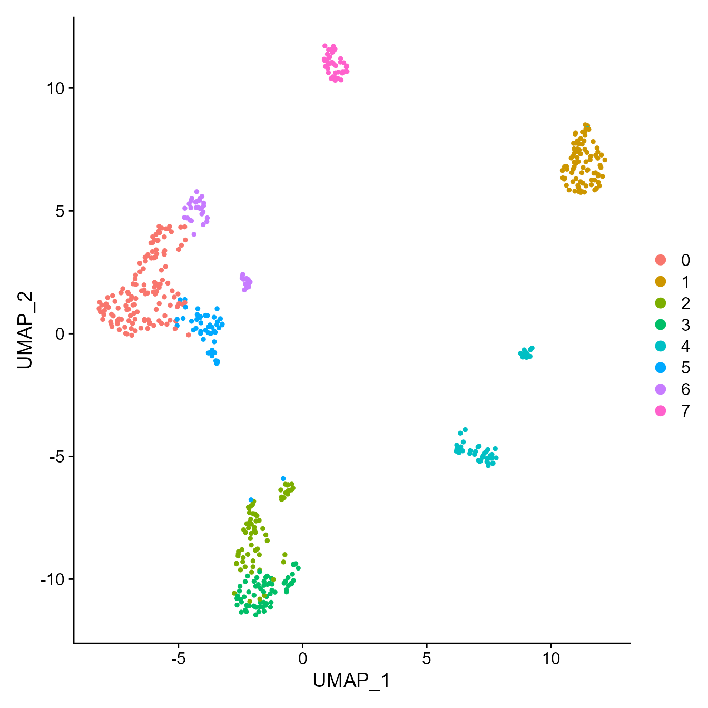
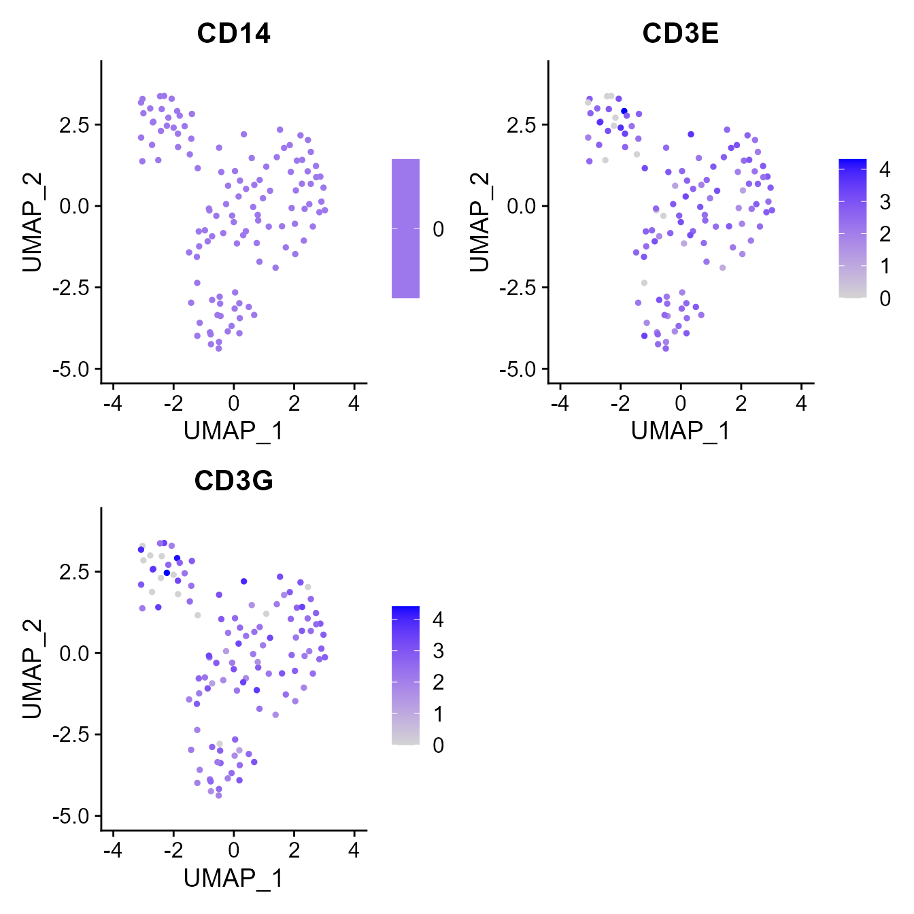

vignettes/vgm_overview.Rmd
vgm_overview.RmdThe VGM is the central data object of the current iteration of Platypus that is produced by the VDJ_GEX_matrix function. The main idea was to create a single object that contains all relevant immune information that can be supplied to all other functions in our package. This additionally provides the benefit that in the case of custom data formats (e.g. pre-existing Seurat objects or non 10x single-cell repertoire information), the user can adapt the necessary column names and still use the downstream functions of Platypus.
For downstream examples of how the VGM interacts with other Platypus functions, please refer to the Platypus Quickstart vignette. This vignette will describe how we create the VGM from the output of 10x genomics cellranger and how this can be modulated by the various fucntion arguments.
As the function processes both GEX and VDJ, this vignette is devided into 3 parts: 2. General settings 3.1 Gene expression (GEX) 3.2. Feature Barcodes (FB) 4. Immune receptor repertoire (VDJ)
Most examples use the yermanos2021a dataset from PlatypusDB, which contains B and T cells (GEX + VDJ) and is also featured in the quickstart vignette due to the low number of cells. For more information, please refer to the corresponding publication: https://doi.org/10.1098/rspb.2020.2793
The VGM takes three different input formats that will be covered in the respective sections: 1. Local Paths to cellranger output files (covered below) 2. Data.in list input from either PlatypusDB_fetch() or PlatypusDB_load_from_disk() (covered in the PlatypusDB vignette) This is for the case where a user would like to download raw PlatypusDB datasets and integrate these with local data. 3. A processed Seurat object as Seurat.in (Covered in section 3.1.4) This is for the case that a user would like to use an existing seurat object, which may be desired when using custom normalization and integration methods for GEX data.
Local paths should be provided to cellranger directories which… …for GEX: Corresponds to the “outs” folder from cellranger count function. Under default parameters, the directory supplied as input to the VGM function should contain the filtered_feature_annotations folder from 10x cellranger count. …for VDJ: Corresponds to the “outs” folder from the cellranger vdj function. Under default parameters, the directory supplied as input to the VGM function should contain files such as clonotypes.csv 10x cellranger vdj.
Below is an example of a basic run. The user will need to change the input directory to their own local output files from cellranger.
#Creating a list with local paths to cellranger directories
VDJ.out.directory.list <-
list("C:/Users/PlatypusDB/yermanos2021b__VDJ_RAW/Aged.CNS.pool.3m.Bcell.S1", "C:/Users/PlatypusDB/yermanos2021b__VDJ_RAW/Aged.CNS.pool.12m.Bcell.S2")
GEX.out.directory.list <-
list("C:/Users/PlatypusDB/yermanos2021b__GEX_RAW/Aged.CNS.pool.3m.Bcell.S1", "C:/Users/PlatypusDB/yermanos2021b__GEX_RAW/Aged.CNS.pool.12m.Bcell.S2")
#Running the VDJ_GEX_matrix function
vgm <- VDJ_GEX_matrix(VDJ.out.directory.list = VDJ.out.directory.list,
GEX.out.directory.list = GEX.out.directory.list,
verbose = T) #For more detailed runtime messages## Warning: The default method for RunUMAP has changed from calling Python UMAP via reticulate to the R-native UWOT using the cosine metric
## To use Python UMAP via reticulate, set umap.method to 'umap-learn' and metric to 'correlation'
## This message will be shown once per sessionThe function can also be run with just GEX or VDJ input. The output object will have the same format as if both GEX and VDJ folders were supplied as input to ensure compatibility with all downstream functions. If this is needed, please provide only the desired input
#Only VDJ run
vgm <- VDJ_GEX_matrix(VDJ.out.directory.list = VDJ.out.directory.list)
#Only GEX run
vgm <- VDJ_GEX_matrix(GEX.out.directory.list = GEX.out.directory.list) Irregardless of the input, the output format stays the same. This allows compatibility with all other downstream Platypus as well as custom functions.
names(vgm)## [1] "VDJ" "GEX" "VDJ.GEX.stats" "Running params"
## [5] "sessionInfo"The VGM output is a list of 5 elements as seen above. Certain downstream functions may add additional list elements but will always maintain the first 5.
VDJ is a data.frame with standard column output
head(vgm[[1]])## barcode sample_id group_id clonotype_id_10x celltype
## 1 s1_AAACGGGGTTTAGGAA-1 s1 1 clonotype7 B cell
## 2 s1_AAGGCAGTCTCTGCTG-1 s1 1 clonotype58 B cell
## 3 s1_ACAGCTACAGTCGTGC-1 s1 1 clonotype65 B cell
## 4 s1_ACTTGTTGTACTTAGC-1 s1 1 clonotype43 B cell
## 5 s1_AGAGCTTGTCATGCAT-1 s1 1 clonotype33 B cell
## 6 s1_AGAGTGGAGGAGTCTG-1 s1 1 clonotype49 B cell
## Nr_of_VDJ_chains Nr_of_VJ_chains VDJ_cdr3s_aa VJ_cdr3s_aa
## 1 1 1 CARIGYAMDYW CQQGNTLPPTF
## 2 1 1 CARDFTTVVARGYFDVW CQQDYSSPWTF
## 3 1 1 CARGITTVVAYYYAMDYW CLQYDNLYTF
## 4 1 1 CTTGPYDYYAMDYW CQQHYSTPYTF
## 5 1 1 CARPHDYDGVDYW CSQSTHVPPWTF
## 6 1 1 CARRYYSNYAWFAYW CQQWSSYPYTF
## VDJ_cdr3s_nt
## 1 TGTGCTCGAATAGGATATGCTATGGACTACTGG
## 2 TGTGCAAGAGACTTTACTACGGTAGTAGCCCGGGGGTACTTCGATGTCTGG
## 3 TGTGCAAGAGGGATTACTACGGTAGTAGCTTATTACTATGCTATGGACTACTGG
## 4 TGTACTACGGGCCCTTATGATTACTATGCTATGGACTACTGG
## 5 TGTGCAAGGCCCCATGATTACGACGGAGTTGACTACTGG
## 6 TGTGCAAGACGCTACTATAGTAACTACGCCTGGTTTGCTTACTGG
## VJ_cdr3s_nt VDJ_chain_contig
## 1 TGCCAACAGGGTAATACGCTTCCTCCGACGTTC AAACGGGGTTTAGGAA-1_contig_2
## 2 TGTCAGCAGGATTATAGCTCTCCGTGGACGTTC AAGGCAGTCTCTGCTG-1_contig_2
## 3 TGTCTACAGTATGATAATCTGTACACGTTC ACAGCTACAGTCGTGC-1_contig_1
## 4 TGTCAGCAACATTATAGCACTCCGTACACGTTC ACTTGTTGTACTTAGC-1_contig_1
## 5 TGCTCTCAAAGTACACATGTTCCTCCGTGGACGTTC AGAGCTTGTCATGCAT-1_contig_2
## 6 TGCCAGCAGTGGAGTAGTTACCCGTACACGTTC AGAGTGGAGGAGTCTG-1_contig_2
## VJ_chain_contig VDJ_chain VJ_chain VDJ_vgene VJ_vgene VDJ_dgene
## 1 AAACGGGGTTTAGGAA-1_contig_1 IGH IGK IGHV8-8 IGKV10-96
## 2 AAGGCAGTCTCTGCTG-1_contig_1 IGH IGK IGHV1-9 IGKV6-32
## 3 ACAGCTACAGTCGTGC-1_contig_2 IGH IGK IGHV1-26 IGKV19-93
## 4 ACTTGTTGTACTTAGC-1_contig_2 IGH IGK IGHV14-1 IGKV8-24
## 5 AGAGCTTGTCATGCAT-1_contig_1 IGH IGK IGHV5-17 IGKV1-110
## 6 AGAGTGGAGGAGTCTG-1_contig_1 IGH IGK IGHV1-9 IGKV4-55 IGHD2-5
## VDJ_jgene VJ_jgene VDJ_cgene VJ_cgene
## 1 IGHJ4 IGKJ1 IGHM IGKC
## 2 IGHJ1 IGKJ1 IGHD IGKC
## 3 IGHJ4 IGKJ2 IGHD IGKC
## 4 IGHJ4 IGKJ2 IGHD IGKC
## 5 IGHJ2 IGKJ1 IGHM IGKC
## 6 IGHJ3 IGKJ2 IGHM IGKC
## VDJ_sequence_nt_raw
## 1 TGGGAAGTGTGCAGCCATGGGCAGGCTTACTTCTTCATTCCTGTTACTGATTGTCCCTGCATATGTCCTGTCCCAGGTTACTCTGAAAGAGTCTGGCCCTGGGATATTGCAGCCCTCCCAGACCCTCAGTCTGACTTGTTCTTTCTCTGGGTTTTCACTGAGCACTTTTGGTATGGGTGTAGGCTGGATTCGTCAGCCTTCAGGGAAGGGTCTGGAGTGGCTGGCACACATTTGGTGGGATGATGATAAGTACTATAACCCAGCCCTGAAGAGTCGGCTCACAATCTCCAAGGATACCTCCAAAAACCAGGTATTCCTCAAGATCGCCAATGTGGACACTGCAGATACTGCCACATACTACTGTGCTCGAATAGGATATGCTATGGACTACTGGGGTCAAGGAACCTCAGTCACCGTCTCCTCAGAGAGTCAGTCCTTCCCAAATGTCTTCCCCCTCGTCTCCTGCGAGAGCCCCCTGTCTGATAAGAATCTGGTGGCCATGGGCTGCCTGGCCCGGGACTTCCTGCCCAGCACCATTTCCTTCACCTGGAACTACCAGAACAACACTGAAGTCATCCAGGGTATCAGAACCTTCCCAACACTGAGGACAGGGGGCAAGTACCTAGCCACCTCGCA
## 2 TTGGGGAGTGTCCTCTCCAAAGTCCTTGAACATAGACTCTAACCATGGAATGGACCTGGGTCTTTCTCTTCCTCCTGTCAGTAACTGCAGGTGTCCACTCCCAGGTTCAGCTGCAGCAGTCTGGAGCTGAGCTGATGAAGCCTGGGGCCTCAGTGAAGCTTTCCTGCAAGGCTACTGGCTACACATTCACTGGCTACTGGATAGAGTGGGTAAAGCAGAGGCCTGGACATGGCCTTGAGTGGATTGGAGAGATTTTACCTGGAAGTGGTAGTACTAACTACAATGAGAAGTTCAAGGGCAAGGCCACATTCACTGCAGATACATCCTCCAACACAGCCTACATGCAACTCAGCAGCCTGACAACTGAGGACTCTGCCATCTATTACTGTGCAAGAGACTTTACTACGGTAGTAGCCCGGGGGTACTTCGATGTCTGGGGCACAGGGACCACGGTCACCGTCTCCTCAGGTAATGAAAAGGGACCTGACATGTTCCTCCTCTCAGAGTGCAAAGCCCCAGAGGAAAATGAAAAGATAAACCTGGGCTGTTTAGTAATTGGAAGTCAGCCACTGAAAATCAGCTGGGAGCCAAAGAAGTCAAGTATAGTTGAACATGTCTTCCCCTCTGAAATGAGAAATGGCAATTATACAATGGTCCTCCAGGTCACTGTGCTGGCCTC
## 3 GGGAACATATGTACAATGTCCTCACCACAGACACTGAACACACTGACTCTAACCATGGGATGGAGCTGGATCTTTCTCTTTCTCCTGTCAGGAACTGCAGGTGTCCTCTCTGAGGTCCAGCTGCAACAATCTGGACCTGAGCTGGTGAAGCCTGGGGCTTCAGTGAAGATATCCTGTAAGGCTTCTGGATACACGTTCACTGACTACTACATGAACTGGGTGAAGCAGAGCCATGGAAAGAGCCTTGAGTGGATTGGAGATATTAATCCTAACAATGGTGGTACTAGCTACAACCAGAAGTTCAAGGGCAAGGCCACATTGACTGTAGACAAGTCCTCCAGCACAGCCTACATGGAGCTCCGCAGCCTGACATCTGAGGACTCTGCAGTCTATTACTGTGCAAGAGGGATTACTACGGTAGTAGCTTATTACTATGCTATGGACTACTGGGGTCAAGGAACCTCAGTCACCGTCTCCTCAGGTAATGAAAAGGGACCTGACATGTTCCTCCTCTCAGAGTGCAAAGCCCCAGAGGAAAATGAAAAGATAAACCTGGGCTGTTTAGTAATTGGAAGTCAGCCACTGAAAATCAGCTGGGAGCCAAAGAAGTCAAGTATAGTTGAACATGTCTTCCCCTCTGAAATGAGAAATGGCAATTATACAATGGTCCTCCAGGTCACTGTGCTGGCCTC
## 4 GGGACTCAACTTCCTTCTTCTCCAGCCAGAATGTCCTTATGTAAGAAAGATCCTGTATGCAAATCATGTGAGACTGTGATGATTAATATAGGGATATCCACACCAAACATCATATGAGCCCTGTCTTCTCTACAGCCACTGAATCTCAAGATCCTTACAATGAAATGCAGCTGGGTCATCTTCTTCCTGATGGCAGTGGTTACAGGGGTCAATTCAGAGGTTCAGCTGCAGCAGTCTGGGGCAGAGCTTGTGAGGCCAGGGGCCTCAGTCAAGTTGTCCTGCACAGCTTCTGGCTTCAACATTAAAGACTACTATATGCACTGGGTGAAGCAGAGGCCTGAACAGGGCCTGGAGTGGATTGGAAGGATTGATCCTGAGGATGGTGATACTGAATATGCCCCGAAGTTCCAGGGCAAGGCCACTATGACTGCAGACACATCCTCCAACACAGCCTACCTGCAGCTCAGCAGCCTGACATCTGAGGACACTGCCGTCTATTACTGTACTACGGGCCCTTATGATTACTATGCTATGGACTACTGGGGTCAAGGAACCTCAGTCACCGTCTCCTCAGGTAATGAAAAGGGACCTGACATGTTCCTCCTCTCAGAGTGCAAAGCCCCAGAGGAAAATGAAAAGATAAACCTGGGCTGTTTAGTAATTGGAAGTCAGCCACTGAAAATCAGCTGGGAGCCAAAGAAGTCAAGTATAGTTGAACATGTCTTCCCCTCTGAAATGAGAAATGGCAATTATACAATGGTCCTCCAGGTCACTGTGCTGGCCTC
## 5 TGGATTCCCAGGTCCTCACATTCAGTGATCAGCACTGAACACAGACCACTCACCATGGACTCCAGGCTCAATTTAGTTTTCCTTGTCCTTATTTTAAAAGGTGTCCAGTGTGAGGTGCAGCTGGTGGAGTCTGGGGGAGGCTTAGTGAAGCCTGGAGGGTCCCTGAAACTCTCCTGTGCAGCCTCTGGATTCACTTTCAGTGACTATGGAATGCACTGGGTTCGTCAGGCTCCAGAGAAGGGGCTGGAGTGGGTTGCATACATTAGTAGTGGCAGTAGTACCATCTACTATGCAGACACAGTGAAGGGCCGATTCACCATCTCCAGAGACAATGCCAAGAACACCCTGTTCCTGCAAATGACCAGTCTGAGGTCTGAGGACACGGCCATGTATTACTGTGCAAGGCCCCATGATTACGACGGAGTTGACTACTGGGGCCAAGGCACCACTCTCACAGTCTCCTCAGAGAGTCAGTCCTTCCCAAATGTCTTCCCCCTCGTCTCCTGCGAGAGCCCCCTGTCTGATAAGAATCTGGTGGCCATGGGCTGCCTGGCCCGGGACTTCCTGCCCAGCACCATTTCCTTCACCTGGAACTACCAGAACAACACTGAAGTCATCCAGGGTATCAGAACCTTCCCAACACTGAGGACAGGGGGCAAGTACCTAGCCACCTCGCA
## 6 TGGGGAGCATATGATCAGTGTCCTCTCCAAAGTCCTTGAACATAGACTCTAACCATGGAATGGACCTGGGTCTTTCTCTTCCTCCTGTCAGTAACTGCAGGTGTCCACTCCCAGGTTCAGCTGCAGCAGTCTGGAGCTGAGCTGATGAAGCCTGGGGCCTCAGTGAAGCTTTCCTGCAAGGCTACTGGCTACACATTCACTGGCTACTGGATAGAGTGGGTAAAGCAGAGGCCTGGACATGGCCTTGAGTGGATTGGAGAGATTTTACCTGGAAGTGGTAGTACTAACTACAATGAGAAGTTCAAGGGCAAGGCCACATTCACTGCAGATACATCCTCCAACACAGCCTACATGCAACTCAGCAGCCTGACAACTGAGGACTCTGCCATCTATTACTGTGCAAGACGCTACTATAGTAACTACGCCTGGTTTGCTTACTGGGGCCAAGGGACTCTGGTCACTGTCTCTGCAGAGAGTCAGTCCTTCCCAAATGTCTTCCCCCTCGTCTCCTGCGAGAGCCCCCTGTCTGATAAGAATCTGGTGGCCATGGGCTGCCTGGCCCGGGACTTCCTGCCCAGCACCATTTCCTTCACCTGGAACTACCAGAACAACACTGAAGTCATCCAGGGTATCAGAACCTTCCCAACACTGAGGACAGGGGGCAAGTACCTAGCCACCTCGCA
## VJ_sequence_nt_raw
## 1 TTGGGGCATTGTAATTGAAGTCAAGACTCAGCCTGGACATGATGTCCTCTGCTCAGTTCCTTGGTCTCCTGTTGCTCTGTTTTCAAGGTACCAGATGTGATATCCAGATGACACAGACTACATCCTCCCTGTCTGCCTCTCTGGGAGACAGAGTCACCATCAGTTGCAGGGCAAGTCAGGACATTAGCAATTATTTAAACTGGTATCAGCAGAAACCAGATGGAACTGTTAAACTCCTGATCTACTACACATCAAGATTACACTCAGGAGTCCCATCAAGGTTCAGTGGCAGTGGGTCTGGAACAGATTATTCTCTCACCATTAGCAACCTGGAGCAAGAAGATATTGCCACTTACTTTTGCCAACAGGGTAATACGCTTCCTCCGACGTTCGGTGGAGGCACCAAGCTGGAAATCAAACGGGCTGATGCTGCACCAACTGTATCCATCTTCCCACCATCCAGTGAGCAGTTAACATCTGGAGGTGCCTCAGTCGTGTGCTTC
## 2 GGCAGGCAAGGGCATCAAGATGAAGTCACAGACCCAGGTCTTCGTATTTCTACTGCTCTGTGTGTCTGGTGCTCATGGGAGTATTGTGATGACCCAGACTCCCAAATTCCTGCTTGTATCAGCAGGAGACAGGGTTACCATAACCTGCAAGGCCAGTCAGAGTGTGAGTAATGATGTAGCTTGGTACCAACAGAAGCCAGGGCAGTCTCCTAAACTGCTGATATACTATGCATCCAATCGCTACACTGGAGTCCCTGATCGCTTCACTGGCAGTGGATATGGGACGGATTTCACTTTCACCATCAGCACTGTGCAGGCTGAAGACCTGGCAGTTTATTTCTGTCAGCAGGATTATAGCTCTCCGTGGACGTTCGGTGGAGGCACCAAGCTGGAAATCAAACGGGCTGATGCTGCACCAACTGTATCCATCTTCCCACCATCCAGTGAGCAGTTAACATCTGGAGGTGCCTCAGTCGTGTGCTTC
## 3 TTATTTGGGGAGTCATTCTTGGTCAGGAGACGTTGTAGAAATGAGACCGTCTATTCAGTTCCTGGGGCTCTTGTTGTTCTGGCTTCATGGTGCTCAGTGTGACATCCAGATGACACAGTCTCCATCCTCACTGTCTGCATCTCTGGGAGGCAAAGTCACCATCACTTGCAAGGCAAGCCAAGACATTAACAAGTATATAGCTTGGTACCAACACAAGCCTGGAAAAGGTCCTAGGCTGCTCATACATTACACATCTACATTACAGCCAGGCATCCCATCAAGGTTCAGTGGAAGTGGGTCTGGGAGAGATTATTCCTTCAGCATCAGCAACCTGGAGCCTGAAGATATTGCAACTTATTATTGTCTACAGTATGATAATCTGTACACGTTCGGAGGGGGGACCAAGCTGGAAATAAAACGGGCTGATGCTGCACCAACTGTATCCATCTTCCCACCATCCAGTGAGCAGTTAACATCTGGAGGTGCCTCAGTCGTGTGCTTC
## 4 TTCCGATCTACTTGTTGTACTTAGCCTGTGTTCACATTCTTATTTGGGGAGTGTTGCTGGTGTCCAGGCATGATGAGCATCAGACAGGCTGGGCAGCAAGATGGAATCACAGACCCAGGTCCTCATGTTTCTTCTGCTCTGGGTATCTGGTGCCTGTGCAGACATTGTGATGACACAGTCTCCATCCTCCCTGGCTATGTCAGTAGGACAGAAGGTCACTATGAGCTGCAAGTCCAGTCAGAGCCTTTTAAATAGTAGCAATCAAAAGAACTATTTGGCCTGGTACCAGCAGAAACCAGGACAGTCTCCTAAACTTCTGGTATACTTTGCATCCACTAGGGAATCTGGGGTCCCTGATCGCTTCATAGGCAGTGGATCTGGGACAGATTTCACTCTTACCATCAGCAGTGTGCAGGCTGAAGACCTGGCAGATTACTTCTGTCAGCAACATTATAGCACTCCGTACACGTTCGGAGGGGGGACCAAGCTGGAAATAAAACGGGCTGATGCTGCACCAACTGTATCCATCTTCCCACCATCCAGTGAGCAGTTAACATCTGGAGGTGCCTCAGTCGTGTGCTTC
## 5 AGAGCTTGTCATGCATTTTGGGCCTATTTCTTTTTTGGGGACTGATCAGTCTCCTCAGGCTGTCTCCTCAGGTTGCCTCCTCAAAATGAAGTTGCCTGTTAGGCTGTTGGTGCTGATGTTCTGGATTCCTGCTTCCAGCAGTGATGTTGTGATGACCCAAACTCCACTCTCCCTGCCTGTCAGTCTTGGAGATCAAGCCTCCATCTCTTGCAGATCTAGTCAGAGCCTTGTACACAGTAATGGAAACACCTATTTACATTGGTACCTGCAGAAGCCAGGCCAGTCTCCAAAGCTCCTGATCTACAAAGTTTCCAACCGATTTTCTGGGGTCCCAGACAGGTTCAGTGGCAGTGGATCAGGGACAGATTTCACACTCAAGATCAGCAGAGTGGAGGCTGAGGATCTGGGAGTTTATTTCTGCTCTCAAAGTACACATGTTCCTCCGTGGACGTTCGGTGGAGGCACCAAGCTGGAAATCAAACGGGCTGATGCTGCACCAACTGTATCCATCTTCCCACCATCCAGTGAGCAGTTAACATCTGGAGGTGCCTCAGTCGTGTGCTTC
## 6 TTGGGGACTTATGAGAATAGTAGTAATTAGCTAGGGACCAAAGTTCAAAGACAAAATGGATTTTCAAGTGCAGATTTTCAGCTTCCTGCTAATCAGTGCCTCAGTCATACTGTCCAGAGGACAAATTGTTCTCACCCAGTCTCCAGCAATCATGTCTGCATCTCCAGGGGAGAAGGTCACCATGACCTGCAGTGCCAGCTCAAGTGTAAGTTACATGTACTGGTACCAGCAGAAGCCAGGATCCTCCCCCAGACTCCTGATTTATGACACATCCAACCTGGCTTCTGGAGTCCCTGTTCGCTTCAGTGGCAGTGGGTCTGGGACCTCTTACTCTCTCACAATCAGCCGAATGGAGGCTGAAGATGCTGCCACTTATTACTGCCAGCAGTGGAGTAGTTACCCGTACACGTTCGGAGGGGGGACCAAGCTGGAAATAAAACGGGCTGATGCTGCACCAACTGTATCCATCTTCCCACCATCCAGTGAGCAGTTAACATCTGGAGGTGCCTCAGTCGTGTGCTTC
## VDJ_sequence_nt_trimmed VJ_sequence_nt_trimmed VDJ_sequence_aa VJ_sequence_aa
## 1
## 2
## 3
## 4
## 5
## 6
## VDJ_trimmed_ref VJ_trimmed_ref VDJ_raw_consensus_id
## 1 clonotype7_concat_ref_1
## 2 clonotype58_concat_ref_1
## 3 clonotype65_concat_ref_1
## 4 clonotype43_concat_ref_1
## 5 clonotype33_concat_ref_1
## 6 clonotype49_concat_ref_1
## VJ_raw_consensus_id orig_barcode clonotype_frequency specifity
## 1 clonotype7_concat_ref_2 AAACGGGGTTTAGGAA 1 NA
## 2 clonotype58_concat_ref_2 AAGGCAGTCTCTGCTG 1 NA
## 3 clonotype65_concat_ref_2 ACAGCTACAGTCGTGC 1 NA
## 4 clonotype43_concat_ref_2 ACTTGTTGTACTTAGC 1 NA
## 5 clonotype33_concat_ref_2 AGAGCTTGTCATGCAT 1 NA
## 6 clonotype49_concat_ref_2 AGAGTGGAGGAGTCTG 1 NA
## affinity GEX_available orig.ident orig_barcode_GEX seurat_clusters
## 1 NA FALSE <NA> <NA> <NA>
## 2 NA TRUE SeuratProject AAGGCAGTCTCTGCTG 5
## 3 NA TRUE SeuratProject ACAGCTACAGTCGTGC 0
## 4 NA TRUE SeuratProject ACTTGTTGTACTTAGC 0
## 5 NA TRUE SeuratProject AGAGCTTGTCATGCAT 0
## 6 NA TRUE SeuratProject AGAGTGGAGGAGTCTG 0
## PC_1 PC_2 UMAP_1 UMAP_2 tSNE_1 tSNE_2 batches
## 1 NA NA NA NA NA NA Unspecified
## 2 -6.257892 -2.522445 -4.813108 0.6205567 2.188638 -3.411929 Unspecified
## 3 -6.375512 -5.164284 -6.385532 1.9866081 6.511564 -7.350143 Unspecified
## 4 -7.476580 -4.585612 -7.730432 0.4828904 2.640636 -11.282818 Unspecified
## 5 -6.710098 -6.034031 -6.045865 3.3426221 9.943012 -6.504101 Unspecified
## 6 -6.667460 -2.615907 -5.995199 0.3335993 1.924303 -6.548645 Unspecified
## clonotype_id
## 1 clonotype7
## 2 clonotype58
## 3 clonotype65
## 4 clonotype43
## 5 clonotype33
## 6 clonotype49The GEX object vgm[[2]] is a Seurat object. Metadata can be accessed as shown below. Depending on integration parameters (Section 2.3), the GEX object can also contain information from the immune receptor VDJ data.
## [1] "orig.ident" "nCount_RNA"
## [3] "nFeature_RNA" "orig_barcode"
## [5] "VDJ_available" "sample_id"
## [7] "group_id" "percent.mt"
## [9] "RNA_snn_res.0.5" "seurat_clusters"
## [11] "clonotype_id_10x" "celltype"
## [13] "Nr_of_VDJ_chains" "Nr_of_VJ_chains"
## [15] "VDJ_cdr3s_aa" "VJ_cdr3s_aa"
## [17] "VDJ_cdr3s_nt" "VJ_cdr3s_nt"
## [19] "VDJ_chain_contig" "VJ_chain_contig"
## [21] "VDJ_chain" "VJ_chain"
## [23] "VDJ_vgene" "VJ_vgene"
## [25] "VDJ_dgene" "VDJ_jgene"
## [27] "VJ_jgene" "VDJ_cgene"
## [29] "VJ_cgene" "VDJ_sequence_nt_raw"
## [31] "VJ_sequence_nt_raw" "VDJ_sequence_nt_trimmed"
## [33] "VJ_sequence_nt_trimmed" "VDJ_sequence_aa"
## [35] "VJ_sequence_aa" "VDJ_trimmed_ref"
## [37] "VJ_trimmed_ref" "VDJ_raw_consensus_id"
## [39] "VJ_raw_consensus_id" "clonotype_frequency"
## [41] "specifity" "affinity"
## [43] "orig_barcode_GEX" "PC_1"
## [45] "PC_2" "UMAP_1"
## [47] "UMAP_2" "tSNE_1"
## [49] "tSNE_2" "batches"
VDJ.GEX.stats is a table containing statistics about the processed datasets. This is useful for QC. Many of the values in this dataframe are imported from the metrics.csv tables provided by Cellranger. In case these tables are not available, the output will contain NA values.
The generation of this table can be toggled by setting get.VDJ.stats = F
names(vgm[[3]])## [1] "Repertoir path"
## [2] "Sample name"
## [3] "Nr unique barcodes"
## [4] "Nr barcodes is_cell"
## [5] "Nr cells 1VDJ 1VJ"
## [6] "Nr cells 1VDJ 0VJ"
## [7] "Nr cells 0VDJ 1VJ"
## [8] "Nr cells 2 or more VDJ 1VJ"
## [9] "Nr cells 1VDJ 2 or more VJ"
## [10] "Nr cells 2 or more VDJ 2 or more VJ"
## [11] "Nr cells full_length"
## [12] "Nr cells productive"
## [13] "Nr cells high_confidence"
## [14] "Nr cells all true"
## [15] "Nr cells all true and 1VDJ 1VJ"
## [16] "Nr clonotypes"
## [17] "Nr clonotypes 1VDJ 1VJ"
## [18] "Nr clonotypes < 1VDJ 1VJ"
## [19] "Nr clonotypes > 1VDJ 1VJ"
## [20] "% Nr unique barcodes"
## [21] "% Nr barcodes is_cell"
## [22] "% Nr cells 1VDJ 1VJ"
## [23] "% Nr cells 1VDJ 0VJ"
## [24] "% Nr cells 0VDJ 1VJ"
## [25] "% Nr cells 2 or more VDJ 1VJ"
## [26] "% Nr cells 1VDJ 2 or more VJ"
## [27] "% Nr cells 2 or more VDJ 2 or more VJ"
## [28] "% Nr cells full_length"
## [29] "% Nr cells productive"
## [30] "% Nr cells high_confidence"
## [31] "% Nr cells all true"
## [32] "% Nr cells all true and 1VDJ 1VJ"
## [33] "% Nr clonotypes"
## [34] "% Nr clonotypes 1VDJ 1VJ"
## [35] "% Nr clonotypes < 1VDJ 1VJ"
## [36] "% Nr clonotypes > 1VDJ 1VJ"
## [37] "Estimated.Number.of.Cells"
## [38] "Mean.Read.Pairs.per.Cell"
## [39] "Number.of.Cells.With.Productive.V.J.Spanning.Pair"
## [40] "Number.of.Read.Pairs"
## [41] "Valid.Barcodes"
## [42] "Q30.Bases.in.Barcode"
## [43] "Q30.Bases.in.RNA.Read.1"
## [44] "Q30.Bases.in.RNA.Read.2"
## [45] "Q30.Bases.in.UMI"
## [46] "Reads.Mapped.to.Any.V.D.J.Gene"
## [47] "Reads.Mapped.to.IGH"
## [48] "Reads.Mapped.to.IGK"
## [49] "Reads.Mapped.to.IGL"
## [50] "Mean.Used.Read.Pairs.per.Cell"
## [51] "Fraction.Reads.in.Cells"
## [52] "Median.IGH.UMIs.per.Cell"
## [53] "Median.IGK.UMIs.per.Cell"
## [54] "Median.IGL.UMIs.per.Cell"
## [55] "Cells.With.Productive.V.J.Spanning.Pair"
## [56] "Cells.With.Productive.V.J.Spanning..IGK..IGH..Pair"
## [57] "Cells.With.Productive.V.J.Spanning..IGL..IGH..Pair"
## [58] "Paired.Clonotype.Diversity"
## [59] "Cells.With.IGH.Contig"
## [60] "Cells.With.IGK.Contig"
## [61] "Cells.With.IGL.Contig"
## [62] "Cells.With.CDR3.annotated.IGH.Contig"
## [63] "Cells.With.CDR3.annotated.IGK.Contig"
## [64] "Cells.With.CDR3.annotated.IGL.Contig"
## [65] "Cells.With.V.J.Spanning.IGH.Contig"
## [66] "Cells.With.V.J.Spanning.IGK.Contig"
## [67] "Cells.With.V.J.Spanning.IGL.Contig"
## [68] "Cells.With.Productive.IGH.Contig"
## [69] "Cells.With.Productive.IGK.Contig"
## [70] "Cells.With.Productive.IGL.Contig"
## [71] "rep_id"
## [72] "Estimated.Number.of.Cells"
## [73] "Mean.Reads.per.Cell"
## [74] "Median.Genes.per.Cell"
## [75] "Number.of.Reads"
## [76] "Valid.Barcodes"
## [77] "Sequencing.Saturation"
## [78] "Q30.Bases.in.Barcode"
## [79] "Q30.Bases.in.RNA.Read"
## [80] "Q30.Bases.in.UMI"
## [81] "Reads.Mapped.to.Genome"
## [82] "Reads.Mapped.Confidently.to.Genome"
## [83] "Reads.Mapped.Confidently.to.Intergenic.Regions"
## [84] "Reads.Mapped.Confidently.to.Intronic.Regions"
## [85] "Reads.Mapped.Confidently.to.Exonic.Regions"
## [86] "Reads.Mapped.Confidently.to.Transcriptome"
## [87] "Reads.Mapped.Antisense.to.Gene"
## [88] "Fraction.Reads.in.Cells"
## [89] "Total.Genes.Detected"
## [90] "Median.UMI.Counts.per.Cell"
## [91] "rep_id"
vgm <- VDJ_GEX_matrix(VDJ.out.directory.list = VDJ.out.directory.list,
GEX.out.directory.list = GEX.out.directory.list,
get.VDJ.stats = F) #Turn off VDJ stats The VGM also stores the parameter used during function call in case a user saves a VGM but deletes/overwrites the initial code….although this should not happen…right?
When the VGM is called under default parameters, the function input arguments can be located in the fourth list element.
vgm[[4]]## sample.path.vdj
## "C:/Users/PlatypusDB/yermanos2021b__VDJ_RAW/Aged.CNS.pool.3m.Bcell.S1 ; C:/Users/PlatypusDB/yermanos2021b__VDJ_RAW/Aged.CNS.pool.12m.Bcell.S2"
## samples.paths.GEX
## "C:/Users/PlatypusDB/yermanos2021b__GEX_RAW/Aged.CNS.pool.3m.Bcell.S1 ; C:/Users/PlatypusDB/yermanos2021b__GEX_RAW/Aged.CNS.pool.12m.Bcell.S2"
## FB.out.directory.list
## "none"
## VDJ.combine
## "TRUE"
## GEX.integrate
## "TRUE"
## integrate.GEX.to.VDJ
## "TRUE"
## integrate.VDJ.to.GEX
## "TRUE"
## exclude.GEX.not.in.VDJ
## "FALSE"
## filter.overlapping.barcodes.GEX
## "TRUE"
## filter.overlapping.barcodes.VDJ
## "TRUE"
## exclude.on.cell.state.markers
## "none"
## get.VDJ.stats
## "TRUE"
## numcores
## "1"
## trim.and.align
## "FALSE"
## select.excess.chains.by.umi.count
## "FALSE"
## excess.chain.confidence.count.threshold
## "1000"
## gap.opening.cost,
## "10"
## gap.extension.cost
## "4"
## parallel.processing
## "none"
## integration.method
## "scale.data"
## VDJ.gene.filter
## "TRUE"
## mito.filter
## "20"
## norm.scale.factor
## "10000"
## n.feature.rna
## "0"
## n.count.rna.min
## "0"
## n.count.rna.max
## "Inf"
## n.variable.features
## "2000"
## cluster.resolution
## "0.5"
## neighbor.dim
## "1;2;3;4;5;6;7;8;9;10"
## mds.dim
## "1;2;3;4;5;6;7;8;9;10"
## subsample.barcodes
## "FALSE"
## group.id
## "1;2"
## FB.count.threshold
## "10"
## FB.ratio.threshold
## "2"The fifth element of the VGM contains the utils::sessionInfo() output to record the versions of R and accompanying packages used during the VGM creation.
class(vgm[[5]])## [1] "sessionInfo"A key feature of Platypus is the direct pairing of VDJ and GEX data.
This is currently achieved by VGM combining the relevant data and
metadata from VDJ (vgm[[1]]) and GEX (vgm[[2]]) objects using the cell
barcode and sample_id information.
Several parameters control this integration:
#Running the VDJ_GEX_matrix function
vgm <- VDJ_GEX_matrix(VDJ.out.directory.list = VDJ.out.directory.list,
GEX.out.directory.list = GEX.out.directory.list,
VDJ.combine = T, #Whether to combine all samples into one VDJ dataframe (is highly recommended)
GEX.integrate = T, #Whether to integrate all GEX samples. For integration methods see GEX section.
integrate.GEX.to.VDJ = T, #Whether to copy GEX metadata into VDJdataframe
integrate.VDJ.to.GEX = T, #Whether to copy VDJ data into GEX
exclude.GEX.not.in.VDJ = F) #Whether to exclude cells in GEX, for which no VDJ data is available. Set this to TRUE if you only want gene expression information for those cells with immune receptor sequences.In some cases, cell barcodes may not be unique across samples. This may occur by pure chance, barcode hopping during library construction and sequencing, or due to low diversity of barcodes during capture. The VGM deals with this in two ways. Firstly, a sample-id prefix is appended to every barcode.
vgm[[1]]$barcode[1]## [1] "s1_AAACGGGGTTTAGGAA-1"
colnames(vgm[[2]])[1]## [1] "s1_AAAGATGAGTCCGGTC-1"Second, the duplicated barcodes can be filtered out to prevent the emergence of unlikely public clones. This is necessary, for example, if a public clone is discovered in two distinct VDJ samples and have the exact same cell barcode. Public clones containing identical cell barcodes are highly unlikely given the massive potential barcode space. If this filtering is set to TRUE, the function will prompt a callback with the number of filtered cells.
#Running the VDJ_GEX_matrix function
vgm <- VDJ_GEX_matrix(VDJ.out.directory.list = VDJ.out.directory.list,
GEX.out.directory.list = GEX.out.directory.list,
filter.overlapping.barcodes.GEX = T,
filter.overlapping.barcodes.VDJ = T) The VGM function attempts to simplify the standard GEX processing and integration functions common to Seurat and Harmony packages, given the majority of immunological studies use this pipeline. Although we are not making the statement that all gene expression datasets should be processed using identical parameters, we find that this function simplifies the standard copy-paste from the Seurat website.
#Running the VDJ_GEX_matrix function
vgm <- VDJ_GEX_matrix(GEX.out.directory.list = GEX.out.directory.list,
VDJ.gene.filter = T, #Remove all VDJ genes from GEX before clustering.
mito.filter = 20, #Remove all cells with a higher % of reads mapped to Mitochondiral genes. Data gathered via Seurat::PercentageFeatureSet(., pattern = "^MT-")
n.count.rna.min = 0, #Remove all cells with a total RNA count below this
n.count.rna.max = Inf, #Remove all cells with a total RNA count above this
n.feature.rna = 0) #Remove all cells with a gene count lower than thisThe default settings are meant to be inclusive, so to not impose filtering to on the dataset which is not directly apparent to the user.
The VGM also offers the option to filter cells based on their gene expression profiles. Removing unwanted cells before clustering can result in more accurate conclusions concerning the cell types of interest. For example, it is likely better to filter out non B and T cells if integrating and analyzing repertoire features such as clonal expansion.
The input format for the exclude.on.cell.state.markers argument is the same as to the GEX_phenotype function. In the example below, we filter out all CD14 positive cells as well as all CD3 epsilon and gamma double negative cells.
#Running the VDJ_GEX_matrix function
vgm <- VDJ_GEX_matrix(GEX.out.directory.list = GEX.out.directory.list,
exclude.on.cell.state.markers = c("CD14+", "CD3E-;CD3G-")) #Remove all cells with a total RNA count above this## Setting GEX directory to provided path/filtered_feature_bc_matrix
## [1] "2022-03-15 16:04:32 CET"## Warning in simpleLoess(y, x, w, span, degree = degree, parametric =
## parametric, : pseudoinverse used at -2.091## Warning in simpleLoess(y, x, w, span, degree = degree, parametric =
## parametric, : neighborhood radius 0.49627## Warning in simpleLoess(y, x, w, span, degree = degree, parametric =
## parametric, : reciprocal condition number 2.8445e-015## Warning in simpleLoess(y, x, w, span, degree = degree, parametric =
## parametric, : There are other near singularities as well. 0.090619## Modularity Optimizer version 1.3.0 by Ludo Waltman and Nees Jan van Eck
##
## Number of nodes: 118
## Number of edges: 3533
##
## Running Louvain algorithm...
## Maximum modularity in 10 random starts: 0.6521
## Number of communities: 3
## Elapsed time: 0 seconds
## [1] "2022-03-15 16:04:36 CET"
#Plotting this confirms the filtering
Seurat::FeaturePlot(vgm[[2]], c("CD14","CD3E","CD3G"))## Warning in Seurat::FeaturePlot(vgm[[2]], c("CD14", "CD3E", "CD3G")): All cells
## have the same value (0) of CD14.
As a workflow we first recommend clustering all cells and running a differential gene expression analysis by cluster using the GEX_cluster_genes() function, which reveals the cluster-defining genes of each cluster. In case that unwanted cells are present (e.g. a contamination of Neutrophils in a B cell dataset), the cluster signatures can be used to identify the best genes for filtering via the initial VGM call.
The VGM offers four methods of GEX dataset integration if GEX.integrate is set to TRUE:
1.”scale.data” integration is based on Seurat logNormalize followed by the ScaleData function based on found variable features (set using n.variable.features)
“anchors” is an integration method which uses similar cell states to align to datasets. Extensive documentation is provided here: https://satijalab.org/seurat/articles/integration_introduction.html
“sct” employs the SCTransform function from Seurat
“harmony” uses the Bioconductor package Harmony. This may be better for larger datasets given the runtime and required memory of anchors and sct.
#Running the VDJ_GEX_matrix function
vgm <- VDJ_GEX_matrix(GEX.out.directory.list = GEX.out.directory.list,
GEX.integrate = T,
integration.method = "scale.data") #Default
BiocManager::install("harmony")
vgm <- VDJ_GEX_matrix(GEX.out.directory.list = GEX.out.directory.list,
GEX.integrate = T,
integration.method = "harmony")Indipendently of integration method, GEX data is scaled and variable features and PCA dimensions are used to calculate low dimensional embedding Three parameters control these:
#Running the VDJ_GEX_matrix function
vgm <- VDJ_GEX_matrix(GEX.out.directory.list = GEX.out.directory.list,
GEX.integrate = T,
integration.method = "scale.data", #Default
norm.scale.factor = 10000, #passed to Seurat::NormalizeData
n.variable.features = 2000, #Passed to Seurat::FindVariableFeatures
cluster.resolution = 0.5, #Passed to Seurat::FindClusters
neighbor.dim = c(1:10), #Passed to Seurat::FindNeighbors
mds.dim = c(1:10)) #Passed to Seurat::RunTSNE and Seurat::RunUMAPThe VGM offers simple and flexible GEX processing, but remains one of many options for GEX processing. We therefore made it possible to use the VDJ processing and VDJ-GEX integration capabilities of the VGM function with an already processed Seurat object.
For a Seurat object to be compatible as input, it must contain two metadata columns: 1. sample_id with sample ids from s1,s2,s3 to sn of character or factor class. These must be in the same order as VDJ.out.directory list elements. 2. group_id of character class.
This input Seurat object will not be processed concerning normalisation or dimensional embeddings. Nonetheless the following filtering operations are still available, as shown below
#Running the VDJ_GEX_matrix function
vgm <- VDJ_GEX_matrix(Seurat.in = preprocessed_GEX,
exclude.GEX.not.in.VDJ = F,
integrate.GEX.to.VDJ = T,
integrate.VDJ.to.GEX = T,
filter.overlapping.barcodes.GEX = T,
exclude.on.cell.state.markers = c("CD3E+")
GEX.integrate = T) Platypus supports feature barcode technology (also referred to as hashing barcodes), but at this time does not support CITE-seq data. (This is on the Platypus-Team To-Do list)
Feature Barcode (FB) data may be imported in two different modes, depending on Cellranger processing proceedures.
FB data processed indipendently of GEX data via Cellranger count will yield an output folder structure which is identical to GEX. These output directories can be fed into the VGM using the FB.out.directory.list
FB data can also be processed in combination with GEX using Cellranger multi and aggr. This yields a single folder structure with both GEX and FB matrices contained within the same output files. In this case, the function will determine the input type (GEX of FB) of each matrix based on the numbers of Features. Any matrix below 100 features is regarded FB and every matrix above that as GEX.
FB.out.directory.list <-
list("~path_to_CellrangerCount_outs_directory",
"~path_to_CellrangerCount_outs_directory")
#Running with separate FB input
vgm <- VDJ_GEX_matrix(GEX.out.directory.list = GEX.out.directory.list,
FB.out.directory.list = FB.out.directory.list)
#Running with FB GEX combined input
vgm <- VDJ_GEX_matrix(GEX.out.directory.list = GEX.cellranger.aggr.out.directory.list)The concept of feature barcodes lies in the attribution of a certain sample or group barcode to a cell given the number of sequenced counts of that barcode. While this does work well in most cases, FB data can be noisy and a subset of cells may be difficult to confidently attribute to a single barcode. The VGM assignes FBs to cells by two criteria:
FB.count.threshold determines how many counts for any FB are neccessary to be considered. This defaults to 10. For example, in case a cell has counts < 10 for all FBs, no single FB will be assigned (Function returns “Not assignable”).
FB.ratio.threshold determines the minimum ratio between the most frequent and second most frequent FB for the most frequent to be confidently assigned. This defaults to 2. For clarity we can consider the following example
| barcode | FB-1 | FB-2 | FB-3 |
|---|---|---|---|
| Cell 1 | 3 | 4 | 9 |
| Cell 2 | 1 | 32 | 43 |
| Cell 3 | 100 | 1 | 13 |
For Cell 1: 9/4 > 2, so FB-3 meets the FB.ratio.threshold. But: 9 < 10 so FB-3 does not meet the FB.count.threshold. For this cell the function returns “Not assignable”
For Cell 2: 43 and 32 > 10 so both FB-2 and FB-3 meet the FB.count.threshold. But: 43/32 < 2 so FB-3 does not meet the FB.ratio.threshold. Again the function returns “Not assignable”
For Cell 3: 100 > 10 and 100/32 > 2 so FB-1 meets both criteria. The function returns “FB-1”
Tweaking these parameters can help to make barcode assignments more inclusive, but also more susceptible to false assignments.
As a QC, we recommend verifying that variability in FB coverage across libraries and samples is consistent and that FB assignments match with expected numbers from e.g. pre-sorting by FACS.
#Running with separate FB input
vgm <- VDJ_GEX_matrix(GEX.out.directory.list = GEX.out.directory.list,
FB.out.directory.list = ,
FB.count.threshold = 10,
FB.ratio.threshold = 2)
#Running with FB GEX combined input
vgm <- VDJ_GEX_matrix(GEX.out.directory.list = GEX.cellranger.aggr.out.directory.list)In many cases, hashing barcodes are being combined with CITE-seq or other surface barcodes. For processing FB barcodes, all other barcodes need to be filtered out. For this the VGM allows excluding Feature barcodes by their names and a regex expression. In the example below we are filtering out all FBs that have “CITE” or “TetTCR” in their name.
#Running with separate FB input
vgm <- VDJ_GEX_matrix(GEX.out.directory.list = GEX.out.directory.list,
FB.out.directory.list = ,
FB.exclude.pattern = "(CITE|TetTCR)")
#Running with FB GEX combined input
vgm <- VDJ_GEX_matrix(GEX.out.directory.list = GEX.cellranger.aggr.out.directory.list)The VGM allows to reformat and merge several dataframes from Cellranger outputs and additionally return aligned and trimmed receptor sequences.
#Basic run with VDJ only
vgm <- VDJ_GEX_matrix(VDJ.out.directory.list = VDJ.out.directory.list) ## [1] "2022-03-15 16:04:37 CET"
## [1] "2022-03-15 16:04:37 CET"
## [1] "2022-03-15 16:04:38 CET"
## [1] "2022-03-15 16:04:38 CET"Due to stochastical sampling, inter-cellular mRNA and biological peculiarities, a single cell barcode may be associated with one, two or more TCR or BCR contigs. A classical cell contains 1VDJ and 1VJ chain. Cells with only one chain are frequent, while chains with more than 2 are rare.
The VGM function and format is fully compatible with any combination of chains, without the need for cell filtering. Fields attributed to a missing chain will contain and empty string (““). In fields which contain information about 2 chains (e.g. VDJ_cdr3_aa in a cell with 2VDJ chains) different chains are separated by”;”
For filtering purposes two numeric columns containing the number of chains are included
## barcode sample_id group_id clonotype_id_10x celltype
## 21 s1_CCGTACTGTCCGACGT-1 s1 1 clonotype18 B cell
## 24 s1_CGAGCCACAATGTAAG-1 s1 1 clonotype44 B cell
## 32 s1_GAAACTCAGGAATCGC-1 s1 1 clonotype35 B cell
## 53 s1_GTACTTTAGAGGGATA-1 s1 1 clonotype11 B cell
## 54 s1_GTAGGCCGTCCCGACA-1 s1 1 clonotype17 B cell
## 55 s1_GTAGTCACAGTAAGAT-1 s1 1 clonotype20 B cell
## Nr_of_VDJ_chains Nr_of_VJ_chains VDJ_cdr3s_aa VJ_cdr3s_aa
## 21 1 0 CARRNHPYYFDYW
## 24 1 0 CARETAQVPYYFDYW
## 32 1 0 CAIGHYYGSSSDVW
## 53 1 0 CALYGSSYDYW
## 54 1 0 CVNGIYYYFDYW
## 55 1 0 CARDSSGWFAYW
## VDJ_cdr3s_nt VJ_cdr3s_nt
## 21 TGTGCAAGACGGAACCACCCCTACTACTTTGACTACTGG
## 24 TGTGCAAGAGAGACAGCTCAGGTTCCGTACTACTTTGACTACTGG
## 32 TGTGCAATAGGGCATTACTACGGTAGTAGCTCCGATGTCTGG
## 53 TGTGCCCTCTACGGTAGTAGCTACGACTACTGG
## 54 TGTGTAAATGGGATTTATTACTACTTTGACTACTGG
## 55 TGTGCAAGAGACAGCTCAGGCTGGTTTGCTTACTGG
## VDJ_chain_contig VJ_chain_contig VDJ_chain VJ_chain VDJ_vgene
## 21 CCGTACTGTCCGACGT-1_contig_1 IGH IGHV4-1
## 24 CGAGCCACAATGTAAG-1_contig_1 IGH IGHV1-26
## 32 GAAACTCAGGAATCGC-1_contig_1 IGH IGHV1-74
## 53 GTACTTTAGAGGGATA-1_contig_1 IGH IGHV2-3
## 54 GTAGGCCGTCCCGACA-1_contig_1 IGH IGHV9-1
## 55 GTAGTCACAGTAAGAT-1_contig_1 IGH IGHV1-39
## VJ_vgene VDJ_dgene VDJ_jgene VJ_jgene VDJ_cgene VJ_cgene
## 21 IGHJ2 IGHM
## 24 IGHD3-2 IGHJ2 IGHM
## 32 IGHD1-1 IGHJ1 IGHM
## 53 IGHJ2 IGHM
## 54 IGHJ2 IGHM
## 55 IGHD3-2 IGHJ3 IGHM
## VDJ_sequence_nt_raw
## 21 GAAGCAAAGGGGATCAGCCCGAGATTCTCATTCAGTGATCAACACTGAACACACATCCCTTACCATGGATTTTGGGCTGATTTTTTTTATTGTTGCTCTTTTAAAAGGGGTCCAGTGTGAGGTGAAGCTTCTCCAGTCTGGAGGTGGCCTGGTGCAGCCTGGAGGATCCCTGAAACTCTCCTGTGCAGCCTCAGGAATCGATTTTAGTAGATACTGGATGAGTTGGGTTCGGCGGGCTCCAGGGAAAGGACTAGAATGGATTGGAGAAATTAATCCAGATAGCAGTACAATAAACTATGCACCATCTCTAAAGGATAAATTCATCATCTCCAGAGACAACGCCAAAAATACGCTGTACCTGCAAATGAGCAAAGTGAGATCTGAGGACACAGCCCTTTATTACTGTGCAAGACGGAACCACCCCTACTACTTTGACTACTGGGGCCAAGGCACCACTCTCACAGTCTCCTCAGAGAGTCAGTCCTTCCCAAATGTCTTCCCCCTCGTCTCCTGCGAGAGCCCCCTGTCTGATAAGAATCTGGTGGCCATGGGCTGCCTGGCCCGGGACTTCCTGCCCAGCACCATTTCCTTCACCTGGAACTACCAGAACAACACTGAAGTCATCCAGGGTATCAGAACCTTCCCAACACTGAGGACAGGGGGCAAGTACCTAGCCACCTCGCA
## 24 TTGGGGACCCCTGAAAACAACATATGTACAATGTCCTCACCACAGACACTGAACACACTGACTCTAACCATGGGATGGAGCTGGATCTTTCTCTTTCTCCTGTCAGGAACTGCAGGTGTCCTCTCTGAGGTCCAGCTGCAACAATCTGGACCTGAGCTGGTGAAGCCTGGGGCTTCAGTGAAGATATCCTGTAAGGCTTCTGGATACACGTTCACTGACTACTACATGAACTGGGTGAAGCAGAGCCATGGAAAGAGCCTTGAGTGGATTGGAGATATTAATCCTAACAATGGTGGTACTAGCTACAACCAGAAGTTCAAGGGCAAGGCCACATTGACTGTAGACAAGTCCTCCAGCACAGCCTACATGGAGCTCCGCAGCCTGACATCTGAGGACTCTGCAGTCTATTACTGTGCAAGAGAGACAGCTCAGGTTCCGTACTACTTTGACTACTGGGGCCAAGGCACCACTCTCACAGTCTCCTCAGAGAGTCAGTCCTTCCCAAATGTCTTCCCCCTCGTCTCCTGCGAGAGCCCCCTGTCTGATAAGAATCTGGTGGCCATGGGCTGCCTGGCCCGGGACTTCCTGCCCAGCACCATTTCCTTCACCTGGAACTACCAGAACAACACTGAAGTCATCCAGGGTATCAGAACCTTCCCAACACTGAGGACAGGGGGCAAGTACCTAGCCACCTCGCA
## 32 GTTACTCTGGAATCGCGTCAGACGTGTTTCTTTTTTGGGGAGAAAAACATGAGATCACTGTTCTCTCTACAGTTACTGAGCACACAGGACCTCACCATGAGATGGAGCTGTATCATCCTCTTCTTGGTAGCAACAGCTACAGGTGTCCACTCCCAGGTCCAACTGCAGCAGCCTGGGGCTGAACTGGTGAAGCCTGGGGCTTCAGTGAAGGTGTCCTGCAAGGCTTCTGGCTACACCTTCACCAGCTACTGGATGCACTGGGTGAAGCAGAGGCCTGGCCAAGGCCTTGAGTGGATTGGAAGGATTCATCCTTCTGATAGTGATACTAACTACAATCAAAAGTTCAAGGGCAAGGCCACATTGACTGTAGACAAATCCTCCAGCACAGCCTACATGCAGCTCAGCAGCCTGACATCTGAGGACTCTGCGGTCTATTACTGTGCAATAGGGCATTACTACGGTAGTAGCTCCGATGTCTGGGGCACAGGGACCACGGTCACCGTCTCCTCAGAGAGTCAGTCCTTCCCAAATGTCTTCCCCCTCGTCTCCTGCGAGAGCCCCCTGTCTGATAAGAATCTGGTGGCCATGGGCTGCCTGGCCCGGGACTTCCTGCCCAGCACCATTTCCTTCACCTGGAACTACCAGAACAACACTGAAGTCATCCAGGGTATCAGAACCTTCCCAACACTGAGGACAGGGGGCAAGTACCTAGCCACCTCGCA
## 53 CTAAAGGGGTTCTTATCTGGGGATCCTCTTCTCATAGAGCCTCCATCAGACCATGGCTGTCCTGGCACTGCTCCTCTGCCTGGTGACATTCCCAAGCTGTGTCCTGTCCCAGGTGCAGCTGAAGGAGTCAGGACCTGGCCTGGTGGCGCCCTCACAGAGCCTGTCCATCACATGCACTGTCTCAGGGTTCTCATTAACCAGCTATGGTGTAAGCTGGGTTCGCCAGCCTCCAGGAAAGGGTCTGGAGTGGCTGGGAGTAATATGGGGTGACGGGAGCACAAATTATCATTCAGCTCTCATATCCAGACTGAGCATCAGCAAGGATAACTCCAAGAGCCAAGTTTTCTTAAAACTGAACAGTCTGCAAACTGATGACACAGCCACGTACTACTGTGCCCTCTACGGTAGTAGCTACGACTACTGGGGCCAAGGCACCACTCTCACAGTCTCCTCAGAGAGTCAGTCCTTCCCAAATGTCTTCCCCCTCGTCTCCTGCGAGAGCCCCCTGTCTGATAAGAATCTGGTGGCCATGGGCTGCCTGGCCCGGGACTTCCTGCCCAGCACCATTTCCTTCACCTGGAACTACCAGAACAACACTGAAGTCATCCAGGGTATCAGAACCTTCCCAACACTGAGGACAGGGGGCAAGTACCTAGCCACCTCGCA
## 54 TTTTGGGGAAGGGAGTGACCAGTTAGTCTTAAGGCACCACTGAGCCCAAGTCTTAGACATCATGGATTGGGTGTGGACCTTGCTATTCCTGATAGCAGCTGCCCAAAGTGCCCAAGCACAGATCCAGTTGGTGCAGTCTGGACCTGAGCTGAAGAAGCCTGGAGAGACAGTCAAGATCTCCTGCAAGGCTTCTGGGTATACCTTCACAGAATATCCAATGCACTGGGTGAAGCAGGCTCCAGGAAAGGGTTTCAAGTGGATGGGCATGATATACACCGACACTGGAGAGCCAACATATGCTGAAGAGTTCAAGGGACGGTTTGCCTTCTCTTTGGAGACCTCTGCCAGCACTGCCTATTTGCAGATCAACAACCTCAAAAATGAGGACACGGCTACATATTTCTGTGTAAATGGGATTTATTACTACTTTGACTACTGGGGCCAAGGCACCACTCTCACAGTCTCCTCAGAGAGTCAGTCCTTCCCAAATGTCTTCCCCCTCGTCTCCTGCGAGAGCCCCCTGTCTGATAAGAATCTGGTGGCCATGGGCTGCCTGGCCCGGGACTTCCTGCCCAGCACCATTTCCTTCACCTGGAACTACCAGAACAACACTGAAGTCATCCAGGGTATCAGAACCTTCCCAACACTGAGGACAGGGGGCAAGTACCTAGCCACCTCGCA
## 55 ACTTATTTGGGGGAAGACACTGACTCTAACCATGGGATGGAGCTGGATCTTTCTCTTCCTCCTCTCAGGAACTGCAGGTGTCCACTCTGAGTTCCAGCTGCAGCAGTCTGGACCTGAGCTGGTGAAGCCTGGCGCTTCAGTGAAGATATCCTGCAAGGCTTCTGGTTACTCATTCACTGACTACAACATGAACTGGGTGAAGCAGAGCAATGGAAAGAGCCTTGAGTGGATTGGAGTAATTAATCCTAACTATGGTACTACTAGCTACAATCAGAAGTTCAAGGGCAAGGCCACATTGACTGTAGACCAATCTTCCAGCACAGCCTACATGCAGCTCAACAGCCTGACATCTGAGGACTCTGCAGTCTATTACTGTGCAAGAGACAGCTCAGGCTGGTTTGCTTACTGGGGCCAAGGGACTCTGGTCACTGTCTCTGCAGAGAGTCAGTCCTTCCCAAATGTCTTCCCCCTCGTCTCCTGCGAGAGCCCCCTGTCTGATAAGAATCTGGTGGCCATGGGCTGCCTGGCCCGGGACTTCCTGCCCAGCACCATTTCCTTCACCTGGAACTACCAGAACAACACTGAAGTCATCCAGGGTATCAGAACCTTCCCAACACTGAGGACAGGGGGCAAGTACCTAGCCACCTCGCA
## VJ_sequence_nt_raw VDJ_sequence_nt_trimmed VJ_sequence_nt_trimmed
## 21
## 24
## 32
## 53
## 54
## 55
## VDJ_sequence_aa VJ_sequence_aa VDJ_trimmed_ref VJ_trimmed_ref
## 21
## 24
## 32
## 53
## 54
## 55
## VDJ_raw_consensus_id VJ_raw_consensus_id orig_barcode
## 21 clonotype18_concat_ref_1 CCGTACTGTCCGACGT
## 24 clonotype44_concat_ref_1 CGAGCCACAATGTAAG
## 32 clonotype35_concat_ref_1 GAAACTCAGGAATCGC
## 53 clonotype11_concat_ref_1 GTACTTTAGAGGGATA
## 54 clonotype17_concat_ref_1 GTAGGCCGTCCCGACA
## 55 clonotype20_concat_ref_1 GTAGTCACAGTAAGAT
## clonotype_frequency specifity affinity batches clonotype_id
## 21 1 NA NA Unspecified clonotype18
## 24 1 NA NA Unspecified clonotype44
## 32 1 NA NA Unspecified clonotype35
## 53 1 NA NA Unspecified clonotype11
## 54 1 NA NA Unspecified clonotype17
## 55 1 NA NA Unspecified clonotype20## barcode sample_id group_id clonotype_id_10x celltype
## 16 s1_CACCTTGCAAACGCGA-1 s1 1 clonotype28 B cell
## 25 s1_CGATGGCAGGGTATCG-1 s1 1 clonotype2 B cell
## 30 s1_CTGATAGGTTCTGTTT-1 s1 1 clonotype57 B cell
## 42 s1_GCTGCTTTCTCTGAGA-1 s1 1 clonotype22 B cell
## 57 s1_GTCACGGCACGCATCG-1 s1 1 clonotype60 B cell
## 67 s1_TGACTAGTCGCCTGTT-1 s1 1 clonotype52 B cell
## Nr_of_VDJ_chains Nr_of_VJ_chains VDJ_cdr3s_aa
## 16 1 2 CARGAPNWYFDVW
## 25 1 2 CARWFAWFAYW
## 30 1 2 CAKNYGSSYSYWYFDVW
## 42 2 2 CTGDYAMDYW;CTLITTVVAKDAMDYW
## 57 1 2 CARRPYYSNSHYAMDYW
## 67 1 2 CARDYYGSSLYYFDYW
## VJ_cdr3s_aa
## 16 CALWYSTHYVF;CWQGTHFPQTF
## 25 CQNDYSYPLTF;CQQYSSYPYTF
## 30 CKQSYNLYTF;CQQSNSWLTF
## 42 CQQWSSNPLTF;CWQGTHFPPF
## 57 CALWYSNHLVF;CGVGDTIKEQFVYVF
## 67 CQQYWSTRTF;CLQYDNLLYTF
## VDJ_cdr3s_nt
## 16 TGTGCAAGAGGGGCTCCCAACTGGTACTTCGATGTCTGG
## 25 TGTGCAAGATGGTTTGCCTGGTTTGCTTACTGG
## 30 TGTGCAAAAAACTATGGTAGTAGCTACAGCTACTGGTACTTCGATGTCTGG
## 42 TGTACCGGGGATTACGCTATGGACTACTGG;TGTACTCTCATTACTACGGTAGTAGCCAAGGATGCTATGGACTACTGG
## 57 TGTGCAAGAAGGCCCTACTATAGTAACTCCCACTATGCTATGGACTACTGG
## 67 TGTGCTAGAGATTACTACGGTAGTAGCTTGTACTACTTTGACTACTGG
## VJ_cdr3s_nt
## 16 TGTGCTCTATGGTACAGCACCCATTATGTTTTC;TGCTGGCAAGGTACACATTTTCCTCAGACGTTC
## 25 TGTCAGAATGATTATAGTTATCCGCTCACGTTC;TGTCAGCAATATAGCAGCTATCCGTACACGTTC
## 30 TGCAAGCAATCTTATAATCTGTACACGTTC;TGTCAACAGAGTAACAGCTGGCTCACGTTC
## 42 TGCCAGCAGTGGAGTAGTAACCCGCTCACGTTC;TGCTGGCAAGGTACACATTTTCCTCCGTTC
## 57 TGTGCTCTATGGTACAGCAACCATTTGGTGTTC;TGTGGTGTGGGTGATACAATTAAGGAACAATTTGTGTATGTTTTC
## 67 TGTCAACAGTATTGGAGTACTCGGACGTTC;TGTCTACAGTATGATAATCTTCTGTACACGTTC
## VDJ_chain_contig
## 16 CACCTTGCAAACGCGA-1_contig_1
## 25 CGATGGCAGGGTATCG-1_contig_3
## 30 CTGATAGGTTCTGTTT-1_contig_3
## 42 GCTGCTTTCTCTGAGA-1_contig_2;GCTGCTTTCTCTGAGA-1_contig_3
## 57 GTCACGGCACGCATCG-1_contig_1
## 67 TGACTAGTCGCCTGTT-1_contig_3
## VJ_chain_contig VDJ_chain VJ_chain
## 16 CACCTTGCAAACGCGA-1_contig_2;CACCTTGCAAACGCGA-1_contig_3 IGH IGL;IGK
## 25 CGATGGCAGGGTATCG-1_contig_1;CGATGGCAGGGTATCG-1_contig_2 IGH IGK;IGK
## 30 CTGATAGGTTCTGTTT-1_contig_1;CTGATAGGTTCTGTTT-1_contig_2 IGH IGK;IGK
## 42 GCTGCTTTCTCTGAGA-1_contig_1;GCTGCTTTCTCTGAGA-1_contig_4 IGH;IGH IGK;IGK
## 57 GTCACGGCACGCATCG-1_contig_2;GTCACGGCACGCATCG-1_contig_3 IGH IGL;IGL
## 67 TGACTAGTCGCCTGTT-1_contig_1;TGACTAGTCGCCTGTT-1_contig_2 IGH IGK;IGK
## VDJ_vgene VJ_vgene VDJ_dgene VDJ_jgene VJ_jgene
## 16 IGHV1-18 IGLV2;IGKV1-135 IGHD4-1 IGHJ1 IGLJ2;IGKJ1
## 25 IGHV1-26 IGKV8-19;IGKV6-23 IGHJ3 IGKJ5;IGKJ2
## 30 IGHV1-80 IGKV8-21;IGKV5-43 IGHJ1 IGKJ2;IGKJ5
## 42 IGHV6-6;IGHV14-4 IGKV4-59;IGKV1-135 IGHJ4;IGHJ4 IGKJ5;IGKJ2
## 57 IGHV1-76 IGLV1;IGLV3 IGHD2-5 IGHJ4 IGLJ1;IGLJ2
## 67 IGHV14-2 IGKV13-84;IGKV19-93 IGHJ2 IGKJ1;IGKJ2
## VDJ_cgene VJ_cgene
## 16 IGHM IGLC2;IGKC
## 25 IGHM IGKC;IGKC
## 30 IGHM IGKC;IGKC
## 42 IGHM;IGHM IGKC;IGKC
## 57 IGHM IGLC1;IGLC2
## 67 IGHM IGKC;IGKC
## VDJ_sequence_nt_raw
## 16 TTTGGGGAACATATGTCCAATGTCCTCTCCACAGGCACTGAACACACTGACTCTAACCATGGGATGGAGCTGGATCTTTCTCCTCTTCCTGTCAGGAACTGCAGGTGTCCTCTCTGAGGTCCAGCTGCAACAGTCTGGACCTGAGCTGGTGAAGCCTGGGGCTTCAGTGAAGATACCCTGCAAGGCTTCTGGATACACATTCACTGACTACAACATGGACTGGGTGAAGCAGAGCCATGGAAAGAGCCTTGAGTGGATTGGAGATATTAATCCTAACAATGGTGGTACTATCTACAACCAGAAGTTCAAGGGCAAGGCCACATTGACTGTAGACAAGTCCTCCAGCACAGCCTACATGGAGCTCCGCAGCCTGACATCTGAGGACACTGCAGTCTATTACTGTGCAAGAGGGGCTCCCAACTGGTACTTCGATGTCTGGGGCACAGGGACCACGGTCACCGTCTCCTCAGAGAGTCAGTCCTTCCCAAATGTCTTCCCCCTCGTCTCCTGCGAGAGCCCCCTGTCTGATAAGAATCTGGTGGCCATGGGCTGCCTGGCCCGGGACTTCCTGCCCAGCACCATTTCCTTCACCTGGAACTACCAGAACAACACTGAAGTCATCCAGGGTATCAGAACCTTCCCAACACTGAGGACAGGGGGCAAGTACCTAGCCACCTCGCA
## 25 TTATGGGGAATGTCCTCACCACAGACACTGAACACACTGACTCTAACCATGGGATGGAGCTGGATCTTTCTCTTTCTCCTGTCAGGAACTGCAGGTGTCCTCTCTGAGGTCCAGCTGCAACAATCTGGACCTGAGCTGGTGAAGCCTGGGGCTTCAGTGAAGATATCCTGTAAGGCTTCTGGATACACGTTCACTGACTACTACATGAACTGGGTGAAGCAGAGCCATGGAAAGAGCCTTGAGTGGATTGGAGATATTAATCCTAACAATGGTGGTACTAGCTACAACCAGAAGTTCAAGGGCAAGGCCACATTGACTGTAGACAAGTCCTCCAGCACAGCCTACATGGAGCTCCGCAGCCTGACATCTGAGGACTCTGCAGTCTATTACTGTGCAAGATGGTTTGCCTGGTTTGCTTACTGGGGCCAAGGGACTCTGGTCACTGTCTCTGCAGAGAGTCAGTCCTTCCCAAATGTCTTCCCCCTCGTCTCCTGCGAGAGCCCCCTGTCTGATAAGAATCTGGTGGCCATGGGCTGCCTGGCCCGGGACTTCCTGCCCAGCACCATTTCCTTCACCTGGAACTACCAGAACAACACTGAAGTCATCCAGGGTATCAGAACCTTCCCAACACTGAGGACAGGGGGCAAGTACCTAGCCACCTCGCA
## 30 TGGGGACAGTCCCTGAACACACTGACTCTAACCATGGAATGGCCTTTGATCTTTCTCTTCCTCCTGTCAGGAACTGCAGGTGTCCAATCCCAGGTTCAGCTGCAGCAGTCTGGGGCTGAGCTGGTGAAGCCTGGGGCCTCAGTGAAGATTTCCTGCAAAGCTTCTGGCTACGCATTCAGTAGCTACTGGATGAACTGGGTGAAGCAGAGGCCTGGAAAGGGTCTTGAGTGGATTGGACAGATTTATCCTGGAGATGGTGATACTAACTACAACGGAAAGTTCAAGGGCAAGGCCACACTGACTGCAGACAAATCCTCCAGCACAGCCTACATGCAGCTCAGCAGCCTGACCTCTGAGGACTCTGCGGTCTATTTCTGTGCAAAAAACTATGGTAGTAGCTACAGCTACTGGTACTTCGATGTCTGGGGCACAGGGACCACGGTCACCGTCTCCTCAGAGAGTCAGTCCTTCCCAAATGTCTTCCCCCTCGTCTCCTGCGAGAGCCCCCTGTCTGATAAGAATCTGGTGGCCATGGGCTGCCTGGCCCGGGACTTCCTGCCCAGCACCATTTCCTTCACCTGGAACTACCAGAACAACACTGAAGTCATCCAGGGTATCAGAACCTTCCCAACACTGAGGACAGGGGGCAAGTACCTAGCCACCTCGCA
## 42 TGGGGGACAGATGCACAAACCTGGACTCACAAGTTTTTCTCTTCAGTGACAAACACAGACATAGAACATTCACGATGTACTTGGGACTGAACTGTGTATTCATAGTTTTTCTCTTAAAAGGTGTCCAGAGTGAAGTGAAGCTTGAGGAGTCTGGAGGAGGCTTGGTGCAACCTGGAGGATCCATGAAACTCTCTTGTGCTGCCTCTGGATTCACTTTTAGTGACGCCTGGATGGACTGGGTCCGCCAGTCTCCAGAGAAGGGGCTTGAGTGGGTTGCTGAAATTAGAAACAAAGCTAATAATCATGCAACATACTATGCTGAGTCTGTGAAAGGGAGGTTCACCATCTCAAGAGATGATTCCAAAAGTAGTGTCTACCTGCAAATGAACAGCTTAAGAGCTGAAGACACTGGCATTTATTACTGTACCGGGGATTACGCTATGGACTACTGGGGTCAAGGAACCTCAGTCACCGTCTCCTCAGAGAGTCAGTCCTTCCCAAATGTCTTCCCCCTCGTCTCCTGCGAGAGCCCCCTGTCTGATAAGAATCTGGTGGCCATGGGCTGCCTGGCCCGGGACTTCCTGCCCAGCACCATTTCCTTCACCTGGAACTACCAGAACAACACTGAAGTCATCCAGGGTATCAGAACCTTCCCAACACTGAGGACAGGGGGCAAGTACCTAGCCACCTCGCA;TTATGGGGATGAACACTGTTTTCTCTACAGTCACTGAATCTCAATGTCCTTACAATGAAATGCAGCTGGGTCATCTTCTTCCTGATGGCAGTGGTTATAGGGGTCAATTCAGAGGTTCAGCTGCAGCAGTCTGGGGCTGAGCTTGTGAGGCCAGGGGCCTCAGTCAAGTTGTCCTGCACAGCTTCTGGCTTTAACATTAAAGACGACTATATGCACTGGGTGAAGCAGAGGCCTGAACAGGGCCTGGAGTGGATTGGATGGATTGATCCTGAGAATGGTGATACTGAATATGCCTCGAAGTTCCAGGGCAAGGCCACTATAACAGCAGACACATCCTCCAACACAGCCTACCTGCAGCTCAGCAGCCTGACATCTGAGGACACTGCCGTCTATTACTGTACTCTCATTACTACGGTAGTAGCCAAGGATGCTATGGACTACTGGGGTCAAGGAACCTCAGTCACCGTCTCCTCAGAGAGTCAGTCCTTCCCAAATGTCTTCCCCCTCGTCTCCTGCGAGAGCCCCCTGTCTGATAAGAATCTGGTGGCCATGGGCTGCCTGGCCCGGGACTTCCTGCCCAGCACCATTTCCTTCACCTGGAACTACCAGAACAACACTGAAGTCATCCAGGGTATCAGAACCTTCCCAACACTGAGGACAGGGGGCAAGTACCTAGCCACCTCGCA
## 57 TCTGTCACGGCACGCATCGTTTTATCCGTTTACTTTTATGGGGATGATCAGTGTCCTCTCTACACAGTCCCTGACGACACTGATTCTAACCATGGGATGGAGCTGGATCTTTTTCTTCCTCCTGTCAGGAACTGCAGGTGTCCACTGTCAGGTCCAGCTGAAGCAGTCTGGGGCTGAGCTGGTGAGGCCTGGGGCTTCAGTGAAGCTGTCCTGCAAGGCTTCTGGCTACACTTTCACTGACTACTATATAAACTGGGTGAAGCAGAGGCCTGGACAGGGACTTGAGTGGATTGCAAGGATTTATCCTGGAAGTGGTAATACTTACTACAATGAGAAGTTCAAGGGCAAGGCCACACTGACTGCAGAAAAATCCTCCAGCACTGCCTACATGCAGCTCAGCAGCCTGACATCTGAGGACTCTGCTGTCTATTTCTGTGCAAGAAGGCCCTACTATAGTAACTCCCACTATGCTATGGACTACTGGGGTCAAGGAACCTCAGTCACCGTCTCCTCAGAGAGTCAGTCCTTCCCAAATGTCTTCCCCCTCGTCTCCTGCGAGAGCCCCCTGTCTGATAAGAATCTGGTGGCCATGGGCTGCCTGGCCCGGGACTTCCTGCCCAGCACCATTTCCTTCACCTGGAACTACCAGAACAACACTGAAGTCATCCAGGGTATCAGAACCTTCCCAACACTGAGGACAGGGGGCAAGTACCTAGCCACCTCGCA
## 67 TATTTGGGGATGAACCCTGTCTTCTCTACAGCCACTGAATCTCAAGGTCCTTACAATGAAATGCAGCTGGATCATCTTCTTCCTGATGGCAGTGGTTACAGGGGTCAATTCAGAGGTTCAGCTGCAGCAGTCTGGGGCAGAGCTTGTGAAGCCAGGGGCCTCAGTCAAGTTGTCCTGCACAGCTTCTGGCTTCAACATTAAAGACTACTATATGCACTGGGTGAAGCAGAGGACTGAACAGGGCCTGGAGTGGATTGGAAGGATTGATCCTGAGGATGGTGAAACTAAATATGCCCCGAAATTCCAGGGCAAGGCCACTATAACAGCAGACACATCCTCCAACACAGCCTACCTGCAGCTCAGCAGCCTGACATCTGAGGACACTGCCGTCTATTACTGTGCTAGAGATTACTACGGTAGTAGCTTGTACTACTTTGACTACTGGGGCCAAGGCACCACTCTCACAGTCTCCTCAGAGAGTCAGTCCTTCCCAAATGTCTTCCCCCTCGTCTCCTGCGAGAGCCCCCTGTCTGATAAGAATCTGGTGGCCATGGGCTGCCTGGCCCGGGACTTCCTGCCCAGCACCATTTCCTTCACCTGGAACTACCAGAACAACACTGAAGTCATCCAGGGTATCAGAACCTTCCCAACACTGAGGACAGGGGGCAAGTACCTAGCCACCTCGCA
## VJ_sequence_nt_raw
## 16 ACTCACCTTGCAAACGCGATCAACAGTTGTATCTTTTATGGGGGACCAATATTGAAAATAATAGACTTGGTTTGTGAATTATGGCCTGGACTTCACTTATACTCTCTCTCCTGGCTCTCTGCTCAGGAGCCAGTTCCCAGGCTGTTGTGACTCAGGAATCTGCACTCACCACATCACCTGGTGGAACAGTCATACTCACTTGTCGCTCAAGTACTGGGGCTGTTACAACTAGTAACTATGCCAACTGGGTCCAAGAAAAACCAGATCATTTATTCACTGGTCTAATAGGTGGTACCAGCAACCGAGCTCCAGGTGTTCCTGTCAGATTCTCAGGCTCCCTGATTGGAGACAAGGCTGCCCTCACCATCACAGGGGCACAGACTGAGGATGATGCAATGTATTTCTGTGCTCTATGGTACAGCACCCATTATGTTTTCGGCGGTGGAACCAAGGTCACTGTCCTAGGTCAGCCCAAGTCCACTCCCACTCTCACCGTGTTTCCACCTTCCTCTGAGGAGCTCAAGGAAAACAAAGCCACACTGGTGTGTCTGATTTCCAACTTTTCCCCGAGTGGTGTGACAGTGGCCTG;ACTGATCACTCTCCTATGTTCATTTCCTCAAAATGATGAGTCCTGCCCAGTTCCTGTTTCTGTTAGTGCTCTGGATTCGGGAAACCAACGGTGATGTTGTGATGACCCAGACTCCACTCACTTTGTCGGTTACCATTGGACAACCAGCCTCCATCTCTTGCAAGTCAAGTCAGAGCCTCTTAGATAGTGATGGAAAGACATATTTGAATTGGTTGTTACAGAGGCCAGGCCAGTCTCCAAAGCGCCTAATCTATCTGGTGTCTAAACTGGACTCTGGAGTCCCTGACAGGTTCACTGGCAGTGGATCAGGGACAGATTTCACACTGAAAATCAGCAGAGTGGAGGCTGAGGATTTGGGAGTTTATTATTGCTGGCAAGGTACACATTTTCCTCAGACGTTCGGTGGAGGCACCAAGCTGGAAATCAAACGGGCTGATGCTGCACCAACTGTATCCATCTTCCCACCATCCAGTGAGCAGTTAACATCTGGAGGTGCCTCAGTCGTGTGCTTC
## 25 TTTATGGGGACATCTGAAAGGCAGGTGGAGCAAGATGGAATCACAGACTCAGGTCCTCATGTCCCTGCTGTTCTGGGTATCTGGTACCTGTGGGGACATTGTGATGACACAGTCTCCATCCTCCCTGACTGTGACAGCAGGAGAGAAGGTCACTATGAGCTGCAAGTCCAGTCAGAGTCTGTTAAACAGTGGAAATCAAAAGAACTACTTGACCTGGTACCAGCAGAAACCAGGGCAGCCTCCTAAACTGTTGATCTACTGGGCATCCACTAGGGAATCTGGGGTCCCTGATCGCTTCACAGGCAGTGGATCTGGAACAGATTTCACTCTCACCATCAGCAGTGTGCAGGCTGAAGACCTGGCAGTTTATTACTGTCAGAATGATTATAGTTATCCGCTCACGTTCGGTGCTGGGACCAAGCTGGAGCTGAAACGGGCTGATGCTGCACCAACTGTATCCATCTTCCCACCATCCAGTGAGCAGTTAACATCTGGAGGTGCCTCAGTCGTGTGCTTC;TTATGGGGAAATACATCAGACCAGCATGGGCATCAAGATGGAGACACATTCTCAGGTCTTTGTATACATGTTGCTGTGGTTGTCTGGTGTTGAAGGAGACATTGTGATGACCCAGTCTCACAAATTCATGTCCACATCAGTAGGAGACAGGGTCAGCATCACCTGCAAGGCCAGTCAGGATGTGGGTACTGCTGTAGCCTGGTATCAACAGAAACCAGGGCAATCTCCTAAACTACTGATTTACTGGGCATCCACCCGGCACACTGGAGTCCCTGATCGCTTCACAGGCAGTGGATCTGGGACAGATTTCACTCTCACCATTAGCAATGTGCAGTCTGAAGACTTGGCAGATTATTTCTGTCAGCAATATAGCAGCTATCCGTACACGTTCGGAGGGGGGACCAAGCTGGAAATAAAACGGGCTGATGCTGCACCAACTGTATCCATCTTCCCACCATCCAGTGAGCAGTTAACATCTGGAGGTGCCTCAGTCGTGTGCTTC
## 30 AGACAGGCAGTGGGAGCAAGATGGATTCACAGGCCCAGGTTCTTATATTGCTGCTGCTATGGGTATCTGGTACCTGTGGGGACATTGTGATGTCACAGTCTCCATCCTCCCTGGCTGTGTCAGCAGGAGAGAAGGTCACTATGAGCTGCAAATCCAGTCAGAGTCTGCTCAACAGTAGAACCCGAAAGAACTACTTGGCTTGGTACCAGCAGAAACCAGGGCAGTCTCCTAAACTGCTGATCTACTGGGCATCCACTAGGGAATCTGGGGTCCCTGATCGCTTCACAGGCAGTGGATCTGGGACAGATTTCACTCTCACCATCAGCAGTGTGCAGGCTGAAGACCTGGCAGTTTATTACTGCAAGCAATCTTATAATCTGTACACGTTCGGAGGGGGGACCAAGCTGGAAATAAAACGGGCTGATGCTGCACCAACTGTATCCATCTTCCCACCATCCAGTGAGCAGTTAACATCTGGAGGTGCCTCAGTCGTGTGCTTC;ATGAGCCACACAAACTCAGGGAAAGCTCGAAGATGGTTTTCACACCTCAGATACTTGGACTTATGCTTTTTTGGATTTCAGCCTCCAGAGGTGATATTGTGCTAACTCAGTCTCCAGCCACCCTGTCTGTGACTCCAGGAGATAGCGTCAGTCTTTCCTGCAGGGCCAGCCAAAGTATTAGCAACAACCTACACTGGTATCAACAAAAATCACATGAGTCTCCAAGGCTTCTCATCAAGTATGCTTCCCAGTCCATCTCTGGGATCCCCTCCAGGTTCAGTGGCAGTGGATCAGGGACAGATTTCACTCTCAGTATCAACAGTGTGGAGACTGAAGATTTTGGAATGTATTTCTGTCAACAGAGTAACAGCTGGCTCACGTTCGGTGCTGGGACCAAGCTGGAGCTGAAACGGGCTGATGCTGCACCAACTGTATCCATCTTCCCACCATCCAGTGAGCAGTTAACATCTGGAGGTGCCTCAGTCGTGTGCTTC
## 42 TTATGGGGAAAGTACTTATGAGAATAGCAGTAATTAGCTAGGGACCAAAATTCAAAGACAAAATGGATTTTCAAGTGCAGATTTTCAGCTTCCTGCTAATCAGTGCCTCAGTCATAATATCCAGAGGACAAATTGTTCTCACCCAGTCTCCAGCAATCATGTCTGCATCTCCAGGGGAGAAGGTCACCATGACCTGCAGTGCCAGCTCAAGTGTAAGTTACATGCACTGGTACCAGCAGAAGTCAGGCACCTCCCCCAAAAGATGGATTTATGACACATCCAAACTGGCTTCTGGAGTCCCTGCTCGCTTCAGTGGCAGTGGGTCTGGGACCTCTTACTCTCTCACAATCAGCAGCATGGAGGCTGAAGATGCTGCCACTTATTACTGCCAGCAGTGGAGTAGTAACCCGCTCACGTTCGGTGCTGGGACCAAGCTGGAGCTGAAACGGGCTGATGCTGCACCAACTGTATCCATCTTCCCACCATCCAGTGAGCAGTTAACATCTGGAGGTGCCTCAGTCGTGTGCTTC;ACTGATCACTCTCCTATGTTCATTTCCTCAAAATGATGAGTCCTGCCCAGTTCCTGTTTCTGTTAGTGCTCTGGATTCGGGAAACCAACGGTGATGTTGTGATGACCCAGACTCCACTCACTTTGTCGGTTACCATTGGACAACCAGCCTCCATCTCTTGCAAGTCAAGTCAGAGCCTCTTAGATAGTGATGGAAAGACATATTTGAATTGGTTGTTACAGAGGCCAGGCCAGTCTCCAAAGCGCCTAATCTATCTGGTGTCTAAACTGGACTCTGGAGTCCCTGACAGGTTCACTGGCAGTGGATCAGGGACAGATTTCACACTGAAAATCAGCAGAGTGGAGGCTGAGGATTTGGGAGTTTATTATTGCTGGCAAGGTACACATTTTCCTCCGTTCGGAGGGGGGACCAAGCTGGAAATAAAACGGGCTGATGCTGCACCAACTGTATCCATCTTCCCACCATCCAGTGAGCAGTTAACATCTGGAGGTGCCTCAGTCGTGTGCTTC
## 57 GGGGACCAATATTGAAAAGAATAGACCTGGTTTGTGAATTATGGCCTGGATTTCACTTATACTCTCTCTCCTGGCTCTCAGCTCAGGGGCCATTTCCCAGGCTGTTGTGACTCAGGAATCTGCACTCACCACATCACCTGGTGAAACAGTCACACTCACTTGTCGCTCAAGTACTGGGGCTGTTACAACTAGTAACTATGCCAACTGGGTCCAAGAAAAACCAGATCATTTATTCACTGGTCTAATAGGTGGTACCAACAACCGAGCTCCAGGTGTTCCTGCCAGATTCTCAGGCTCCCTGATTGGAGACAAGGCTGCCCTCACCATCACAGGGGCACAGACTGAGGATGAGGCAATATATTTCTGTGCTCTATGGTACAGCAACCATTTGGTGTTCGGTGGAGGAACCAAACTGACTGTCCTAGGCCAGCCCAAGTCTTCGCCATCAGTCACCCTGTTTCCACCTTCCTCTGAAGAGCTCGAGACTAACAAGGCCACACTGGTGTGTA;TCTGTCACGGCACGCATCGGACTATCAAATATCTTCTATGGGAGAGAGAACTACAACCTGTCTGTCTCAGCAGAGATCAGTAGTACCTGCATTATGGCCTGGACTCCTCTCTTCTTCTTCTTTGTTCTTCATTGCTCAGGTTCTTTCTCCCAACTTGTGCTCACTCAGTCATCTTCAGCCTCTTTCTCCCTGGGAGCCTCAGCAAAACTCACGTGCACCTTGAGTAGTCAGCACAGTACGTACACCATTGAATGGTATCAGCAACAGCCACTCAAGCCTCCTAAGTATGTGATGGAGCTTAAGAAAGATGGAAGCCACAGCACAGGTGATGGGATTCCTGATCGCTTCTCTGGATCCAGCTCTGGTGCTGATCGCTACCTTAGCATTTCCAACATCCAGCCTGAAGATGAAGCAATATACATCTGTGGTGTGGGTGATACAATTAAGGAACAATTTGTGTATGTTTTCGGCGGTGGAACCAAGGTCACTGTCCTAGGTCAGCCCAAGTCCACTCCCACTCTCACCGTGTTTCCACCTTCCTCTGAGGAGCTCAAGGAAAACAAAGCCACACTGGTGTGTCTGATTTCCAACTTTTCCCCGAGTGGTGTGACAGTGGCCTG
## 67 TGGGGAATGTCAGGTCACAGCAGAAACATGAAGTTTCCTTCTCAACTTCTGCTCTTACTGCTGTTTGGAATCCCAGGCATGATATGTGACATCCAGATGACACAATCTTCATCCTCCTTTTCTGTATCTCTAGGAGACAGAGTCACCATTACTTGCAAGGCAAGTGAGGACATATATAATCGGTTAGCCTGGTATCAGCAGAAACCAGGAAATGCTCCTAGGCTCTTAATATCTGGTGCAACCAGTTTGGAAACTGGGGTTCCTTCAAGATTCAGTGGCAGTGGATCTGGAAAGGATTACACTCTCAGCATTACCAGTCTTCAGACTGAAGATGTTGCTACTTATTACTGTCAACAGTATTGGAGTACTCGGACGTTCGGTGGAGGCACCAAGCTGGAAATCAAACGGGCTGATGCTGCACCAACTGTATCCATCTTCCCACCATCCAGTGAGCAGTTAACATCTGGAGGTGCCTCAGTCGTGTGCTTC;TGACTAGTCGCCTGTTCGTACTTCGTTTTATTATTTGGGAGTCATTCTTGGTCAGGAGACGTTGTAGAAATGAGACCGTCTATTCAGTTCCTGGGGCTCTTGTTGTTCTGGCTTCATGGTGCTCAGTGTGACATCCAGATGACACAGTCTCCATCCTCACTGTCTGCATCTCTGGGAGGCAAAGTCACCATCACTTGCAAGGCAAGCCAAGACATTAACAAGTATATAGCTTGGTACCAACACAAGCCTGGAAAAGGTCCTAGGCTGCTCATACATTACACATCTACATTACAGCCAGGCATCCCATCAAGGTTCAGTGGAAGTGGGTCTGGGAGAGATTATTCCTTCAGCATCAGCAACCTGGAGCCTGAAGATATTGCAACTTATTATTGTCTACAGTATGATAATCTTCTGTACACGTTCGGAGGGGGGACCAAGCTGGAAATAAAACGGGCTGATGCTGCACCAACTGTATCCATCTTCCCACCATCCAGTGAGCAGTTAACATCTGGAGGTGCCTCAGTCGTGTGCTTC
## VDJ_sequence_nt_trimmed VJ_sequence_nt_trimmed VDJ_sequence_aa
## 16
## 25
## 30
## 42
## 57
## 67
## VJ_sequence_aa VDJ_trimmed_ref VJ_trimmed_ref VDJ_raw_consensus_id
## 16 clonotype28_concat_ref_1
## 25 clonotype2_concat_ref_1
## 30 clonotype57_concat_ref_1
## 42 clonotype22_concat_ref_1
## 57 clonotype60_concat_ref_1
## 67 clonotype52_concat_ref_1
## VJ_raw_consensus_id orig_barcode clonotype_frequency specifity
## 16 clonotype28_concat_ref_3 CACCTTGCAAACGCGA 1 NA
## 25 clonotype2_concat_ref_2 CGATGGCAGGGTATCG 2 NA
## 30 clonotype57_concat_ref_2 CTGATAGGTTCTGTTT 1 NA
## 42 clonotype22_concat_ref_3 GCTGCTTTCTCTGAGA 1 NA
## 57 clonotype60_concat_ref_2 GTCACGGCACGCATCG 1 NA
## 67 clonotype52_concat_ref_3 TGACTAGTCGCCTGTT 1 NA
## affinity batches clonotype_id
## 16 NA Unspecified clonotype28
## 25 NA Unspecified clonotype2
## 30 NA Unspecified clonotype57
## 42 NA Unspecified clonotype22
## 57 NA Unspecified clonotype60
## 67 NA Unspecified clonotype52While filtering out all cells with aberrant chain numbers is often used during processing of VDJ data, Platypus offers a format which can accomodate and integrate these cells into analysis. (See VDJ_clonotype_v3()). A third option was proposed by Zhang W et al. (Sci Adv. 2021 10.1126/sciadv.abf5835): To choose between excess chains, by the count of unique molecular identifier of each contig (UMIs). The VGM function implements this strategy with two parameters: 1. select.excess.chains.by.umi.count Is a boolean. Once set to TRUE the VGM will filter excess chains based on UMI count
select.excess.chains.by.umi.count = T
| barcode | Nr_of_VJ_chains | VJ_UMIs |
|---|---|---|
| Cell 1 | 2 | 1;1 |
| Cell 2 | 2 | 1;5 |
| Cell 3 | 2 | 3;3 |
FOR: excess.chain.confidence.count.threshold = 1000
Cell 1 -> both chains are below the threshold and are therefore subject to filtering. Given that both chains have the same UMI count, a one contig is eliminated at random. Cell 2 -> both chains are below the threshold and subject to filtering. Chain 2 has the higher UMI and is therefore kept Cell 3 -> proceeds as for Cell 1
FOR: excess.chain.confidence.count.threshold = 3
Cell 1 -> same as above Cell 2 -> chain 1 is below threshold and subject to filtering. Chain 2 is above threshold and therefore considered a high confidence chain and not filtered Cell 3 -> Both chains are equal or above threshold, both are considered high confident and no chain is filtered.
UMI distribution within VDJ datasets can vary. To optimize this filtering parameter we recommend investigating UMI frequencies in cells with double chains.
vgm <- VDJ_GEX_matrix(VDJ.out.directory.list = VDJ.out.directory.list,
select.excess.chains.by.umi.count = T,
excess.chain.confidence.count.threshold = 1000) It may be useful to obtain full-length sequences (e.g., for phylogenetics or experimental expression and validation, see Pogson M. et al. Nat Comm. 2016, 10.1038/ncomms12535) from single-cell sequencing data. We have therefore added an option to recover both trimmed and untrimmed sequences as determined by the cellranger vdj function. If the user sets the trim.and.align parameter to TRUE, this will return processed VDJ contig strings as detailed below:
Trimming: The raw nt contig sequences are trimmed to the start of the V segment and the end of the J segment. (VDJ/VJ_sequence_nt_trimmed) These trimmed sequences contain signal peptide information. In the case that a user does not want this, we currently use MIXCR to realign and extract the sequence that spans FR1 to FR4 for both heavy and light chains. This can be done using the VDJ_call_MiXCR() function within Platypus, although it does require the user to download mixcr locally.
Translation: The trimmed contigs are translated to yield full amino acid sequences. (VDJ/VJ_sequence_aa)
Realigning to reference: The untrimmed germline sequences (as determined by 10x genomics) for each clonotype consensus sequence are returned are returned when trim.and.align = T. This can be used on IMGT or with MIXCR to further provide a shorter reference sequence that covers just the FR1 to FR4. Furthermore the function aligns trimmed contig sequences to reference contigs using Biostrings::pairwiseAlignment with alignment = “local”; see optimization parameters in section 4.1.2). This results in a reference sequence from the start of the V segment to the end of the J segment. (VDJ/VJ_trimmed_ref) Most of the time this trimmed germline sequence will be out of frame given the CDR3 deletions and insertions. In the case that a user wants an in-frame germline (e.g. for expression), the CDR3 will likely need to be replace. We are currently developing a pipeline that supplies CDR3s of those recovered sequences that are closest to germline - so stay tuned :)
The trimmed contigs are aligned to the sequences of the concat_ref.fasta file and the reference is trimed accordingly. (This is done using: Biostrings::pairwiseAlignment with alignment = “local”; see optimization parameters in section 4.1.2)
vgm <- VDJ_GEX_matrix(VDJ.out.directory.list = VDJ.out.directory.list,
trim.and.align = T) ## [1] "2022-03-15 16:04:39 CET"
## [1] "2022-03-15 16:04:39 CET"
## [1] "2022-03-15 16:04:53 CET"
## [1] "2022-03-15 16:05:14 CET"
vgm[[1]][1,c("VDJ_sequence_nt_raw", "VDJ_sequence_nt_trimmed", "VDJ_sequence_aa", "VDJ_trimmed_ref")]## VDJ_sequence_nt_raw
## 1 TGGGAAGTGTGCAGCCATGGGCAGGCTTACTTCTTCATTCCTGTTACTGATTGTCCCTGCATATGTCCTGTCCCAGGTTACTCTGAAAGAGTCTGGCCCTGGGATATTGCAGCCCTCCCAGACCCTCAGTCTGACTTGTTCTTTCTCTGGGTTTTCACTGAGCACTTTTGGTATGGGTGTAGGCTGGATTCGTCAGCCTTCAGGGAAGGGTCTGGAGTGGCTGGCACACATTTGGTGGGATGATGATAAGTACTATAACCCAGCCCTGAAGAGTCGGCTCACAATCTCCAAGGATACCTCCAAAAACCAGGTATTCCTCAAGATCGCCAATGTGGACACTGCAGATACTGCCACATACTACTGTGCTCGAATAGGATATGCTATGGACTACTGGGGTCAAGGAACCTCAGTCACCGTCTCCTCAGAGAGTCAGTCCTTCCCAAATGTCTTCCCCCTCGTCTCCTGCGAGAGCCCCCTGTCTGATAAGAATCTGGTGGCCATGGGCTGCCTGGCCCGGGACTTCCTGCCCAGCACCATTTCCTTCACCTGGAACTACCAGAACAACACTGAAGTCATCCAGGGTATCAGAACCTTCCCAACACTGAGGACAGGGGGCAAGTACCTAGCCACCTCGCA
## VDJ_sequence_nt_trimmed
## 1 ATGGGCAGGCTTACTTCTTCATTCCTGTTACTGATTGTCCCTGCATATGTCCTGTCCCAGGTTACTCTGAAAGAGTCTGGCCCTGGGATATTGCAGCCCTCCCAGACCCTCAGTCTGACTTGTTCTTTCTCTGGGTTTTCACTGAGCACTTTTGGTATGGGTGTAGGCTGGATTCGTCAGCCTTCAGGGAAGGGTCTGGAGTGGCTGGCACACATTTGGTGGGATGATGATAAGTACTATAACCCAGCCCTGAAGAGTCGGCTCACAATCTCCAAGGATACCTCCAAAAACCAGGTATTCCTCAAGATCGCCAATGTGGACACTGCAGATACTGCCACATACTACTGTGCTCGAATAGGATATGCTATGGACTACTGGGGTCAAGGAACCTCAGTCACCGTCTCCTCA
## VDJ_sequence_aa
## 1 MGRLTSSFLLLIVPAYVLSQVTLKESGPGILQPSQTLSLTCSFSGFSLSTFGMGVGWIRQPSGKGLEWLAHIWWDDDKYYNPALKSRLTISKDTSKNQVFLKIANVDTADTATYYCARIGYAMDYWGQGTSVTVSS
## VDJ_trimmed_ref
## 1 ATGGGCAGGCTTACTTCTTCATTCCTGTTACTGATTGTCCCTGCATATGTCCTGTCCCAGGTTACTCTGAAAGAGTCTGGCCCTGGGATATTGCAGCCCTCCCAGACCCTCAGTCTGACTTGTTCTTTCTCTGGGTTTTCACTGAGCACTTTTGGTATGGGTGTAGGCTGGATTCGTCAGCCTTCAGGGAAGGGTCTGGAGTGGCTGGCACACATTTGGTGGGATGATGATAAGTACTATAACCCAGCCCTGAAGAGTCGGCTCACAATCTCCAAGGATACCTCCAAAAACCAGGTATTCCTCAAGATCGCCAATGTGGACACTGCAGATACTGCCACATACTACTGTGCTCGAATAGATTACTATGCTATGGACTACTGGGGTCAAGGAACCTCAGTCACCGTCTCCTCAA key difficulty of TCR and BCR sequences, is that CDR3-containing junction regions almost never matches known references. This leaves alignment gaps and can lead to the highest scoring alignment to not contain the junction-following J segment. The VGM therefore allows to tweak the alignment parameters gap.opening.cost and gap.extension.cost
vgm <- VDJ_GEX_matrix(VDJ.out.directory.list = VDJ.out.directory.list,
trim.and.align = T,
gap.opening.cost = 10,
gap.extension.cost = 4) To accelerate alignment the VGM allows for multicore processing via the functions mclapply or parlapply depending on the operating system from the Parallel package. Given initiation times of multicore processes, we only recommend using it for datasets with >2000 cells.
The parameter numcores can be used to set the number of cores used. This defaults to all available cores, therefore, setting a limit when running the function on a cluster is crucial.
By default parallel.processing is set to “none” and the function uses standard lapply
#For LINUX and WINDOWS users
vgm <- VDJ_GEX_matrix(VDJ.out.directory.list = VDJ.out.directory.list,
trim.and.align = T,
parallel.processing = "parlapply",
numcores = 8)
#For MAC users
vgm <- VDJ_GEX_matrix(VDJ.out.directory.list = VDJ.out.directory.list,
trim.and.align = T,
parallel.processing = "mclapply",
numcores = 8) We hope that this comprehensive vignette of the VGM function enables any user to employ the full functionality of this function. If you have any issues, requests or ideas concerning existing or new features, please reach out to us via Github or Email.
## R version 4.0.5 (2021-03-31)
## Platform: x86_64-w64-mingw32/x64 (64-bit)
## Running under: Windows 10 x64 (build 19044)
##
## Matrix products: default
##
## locale:
## [1] LC_COLLATE=German_Germany.1252 LC_CTYPE=German_Germany.1252
## [3] LC_MONETARY=German_Germany.1252 LC_NUMERIC=C
## [5] LC_TIME=German_Germany.1252
##
## attached base packages:
## [1] stats graphics grDevices utils datasets methods base
##
## other attached packages:
## [1] Platypus_3.3.3 SeuratObject_4.0.4 Seurat_4.1.0 forcats_0.5.1
## [5] stringr_1.4.0 purrr_0.3.4 readr_2.1.2 tidyr_1.1.3
## [9] tibble_3.1.2 ggplot2_3.3.5 tidyverse_1.3.1 dplyr_1.0.7
##
## loaded via a namespace (and not attached):
## [1] readxl_1.3.1 backports_1.4.1 systemfonts_1.0.4
## [4] plyr_1.8.6 igraph_1.2.6 lazyeval_0.2.2
## [7] splines_4.0.5 listenv_0.8.0 scattermore_0.7
## [10] digest_0.6.27 useful_1.2.6 htmltools_0.5.2
## [13] fansi_0.5.0 magrittr_2.0.1 memoise_2.0.1
## [16] tensor_1.5 cluster_2.1.2 ROCR_1.0-11
## [19] tzdb_0.2.0 Biostrings_2.58.0 globals_0.14.0
## [22] modelr_0.1.8 matrixStats_0.59.0 pkgdown_2.0.2
## [25] spatstat.sparse_2.0-0 colorspace_2.0-2 rvest_1.0.2
## [28] ggrepel_0.9.1 textshaping_0.3.6 haven_2.4.3
## [31] xfun_0.27 crayon_1.5.0 jsonlite_1.7.2
## [34] spatstat.data_2.1-2 survival_3.2-11 zoo_1.8-9
## [37] glue_1.4.2 polyclip_1.10-0 gtable_0.3.0
## [40] zlibbioc_1.36.0 XVector_0.30.0 seqinr_4.2-8
## [43] leiden_0.3.9 future.apply_1.8.1 BiocGenerics_0.36.1
## [46] abind_1.4-5 scales_1.1.1 DBI_1.1.2
## [49] miniUI_0.1.1.1 Rcpp_1.0.7 viridisLite_0.4.0
## [52] xtable_1.8-4 reticulate_1.20 spatstat.core_2.2-0
## [55] stats4_4.0.5 htmlwidgets_1.5.4 httr_1.4.2
## [58] RColorBrewer_1.1-2 ellipsis_0.3.2 ica_1.0-2
## [61] farver_2.1.0 pkgconfig_2.0.3 uwot_0.1.10
## [64] sass_0.4.0 dbplyr_2.1.1 deldir_0.2-10
## [67] utf8_1.2.1 labeling_0.4.2 tidyselect_1.1.1
## [70] rlang_0.4.10 reshape2_1.4.4 later_1.2.0
## [73] munsell_0.5.0 cellranger_1.1.0 tools_4.0.5
## [76] cachem_1.0.6 cli_3.1.1 generics_0.1.2
## [79] ade4_1.7-18 broom_0.7.12 ggridges_0.5.3
## [82] evaluate_0.14 fastmap_1.1.0 yaml_2.2.1
## [85] ragg_1.2.1 goftest_1.2-2 knitr_1.37
## [88] fs_1.5.2 fitdistrplus_1.1-6 RANN_2.6.1
## [91] pbapply_1.5-0 future_1.23.0 nlme_3.1-152
## [94] mime_0.11 xml2_1.3.3 compiler_4.0.5
## [97] rstudioapi_0.13 plotly_4.10.0 png_0.1-7
## [100] spatstat.utils_2.2-0 reprex_2.0.1 bslib_0.3.1
## [103] stringi_1.7.4 highr_0.9 RSpectra_0.16-0
## [106] desc_1.4.0 lattice_0.20-44 Matrix_1.3-4
## [109] vctrs_0.3.8 pillar_1.7.0 lifecycle_1.0.1
## [112] spatstat.geom_2.2-0 lmtest_0.9-38 jquerylib_0.1.4
## [115] RcppAnnoy_0.0.18 data.table_1.14.0 cowplot_1.1.1
## [118] irlba_2.3.3 httpuv_1.6.1 patchwork_1.1.1
## [121] R6_2.5.1 promises_1.2.0.1 KernSmooth_2.23-20
## [124] gridExtra_2.3 IRanges_2.24.1 parallelly_1.30.0
## [127] codetools_0.2-18 MASS_7.3-54 assertthat_0.2.1
## [130] rprojroot_2.0.2 withr_2.4.3 sctransform_0.3.3
## [133] S4Vectors_0.28.1 mgcv_1.8-36 parallel_4.0.5
## [136] hms_1.1.1 grid_4.0.5 rpart_4.1-15
## [139] rmarkdown_2.11 Rtsne_0.15 shiny_1.7.1
## [142] lubridate_1.8.0